Research-Engineer CurriculumVolume 19 of 28
Classical ML: Models That Still Win
Build the classic models from scratch. Learn why they win or fail. Build the debugging discipline that separates a strong ML interview candidate from the rest.
Why this category exists
Deep learning gets the headlines. But classical models still win an enormous share of real work: tabular data, small datasets, problems where interpretability or training cost matters. And every interview loop that tests whether you understand the fundamentals.
Volume 2 built the modeling foundations as ideas. This volume makes you build the models from scratch. Calibrate their probabilities. Then deliberately break them, so you know exactly where each one fails.
Without these skills, you are a framework operator, not a modeler. You can call LogisticRegression().fit() without knowing the gradient, and it will work, right up until the loss does not converge and you cannot say why. You can report accuracy on an imbalanced problem and look competent, right up until someone asks about recall. You can tune a gradient boosting model without understanding bias and variance. You will overfit it with too many estimators while the validation curve screams.
The ten labs all rate Medium, and the arc is deliberate. Week 3 starts with the convex models: logistic regression from scratch (gradients, Hessian, convexity) and linear regression with ridge and GLM thinking. Then it turns to probabilities as first-class outputs: calibration, ECE, temperature scaling, cost-based thresholds, plus kNN and Naive Bayes as the distance-based and generative contrasts. Week 4 starts with trees and margins: decision trees from impurity up, SVMs with the kernel trick, ensembles and boosting. It ends where production reality lives: a full lab on failure modes (leakage, spurious correlation, shift, imbalance) and a capstone that assembles the complete pipeline on Titanic.
How to read this diagram
- Four stages left to right: linear models (Week 3, days 1 to 2), probability-first methods (days 3 to 5), trees and margins (Week 4, days 1 to 3), and the break-it labs (days 4 to 5).
- Every lab carries a Medium rating. The difficulty is not the syntax but the reasoning: convexity, calibration, and failure analysis.
- The arc is deliberate: implement each model, then calibrate its probabilities, then study exactly how it fails.
- The Classical ML Lab capstone at the end assembles the full pipeline: holdout split, baselines, cross-validated comparison, and slice-based error analysis.
Key takeaways
- Classical models still win on tabular data, small data, and anywhere interpretability or cost matters.
- Week 3: convex models from scratch, then probabilities as first-class outputs (calibration, thresholds).
- Week 4: trees, margins, and ensembles, then deliberate failure-mode study and a full-pipeline capstone.
- The interview bar is implementation plus diagnosis: derive the gradient, calibrate the output, name the failure.
Design prompt
- Why does logistic regression converge to a global optimum while a neural network might not?
- Your model has 0.95 ROC-AUC but its predicted probabilities are unusable. Explain the distinction.
- When would you choose a random forest over gradient boosting, and what does each knob do?
- Name three ways a model can look great offline and fail in production.
The labs below run in week order, from the logistic regression lab through the capstone pipeline lab.
Core ideas, worked end to end
Concept 1: Convex models, gradients, and regularization
1. What it is, in plain words. Logistic regression models P(y=1|x) with a sigmoid applied to a linear score. Ordinary least squares (OLS) fits a line by minimizing squared error. Ridge regression adds an L2 penalty on the weights.
A function is convex when its Hessian is PSD everywhere, which guarantees a single global minimum. A GLM (generalized linear model) generalizes linear regression by pairing a distribution with a link function.
2. Why it exists. These are the models you must be able to build blindfolded. Every interviewer uses them to check whether your ML knowledge is real or borrowed from frameworks.
The convexity of logistic regression is the reason gradient descent "just works" here while it needs babysitting elsewhere. Ridge exists because real features are collinear, and collinearity makes unpenalized fits swing wildly.
3. How it works, step by step. Step one: write the linear score z = Xw + b. Step two: for classification, squash it through the sigmoid p = 1/(1+e^-z), implemented in the stable form that avoids overflow. Step three: write the binary cross-entropy loss, averaged over n examples.
Step four: differentiate to get the gradient X^T(p - y)/n, a beautifully simple form: features transposed times errors. Step five: check convexity by forming the Hessian H = (1/n) X^T S X with S = diag(p(1-p)). Verify it is PSD. The lab does this empirically and via Hessian-vector products. Step six: for regression, compare the closed-form solve against gradient descent, then add the ridge penalty and watch collinearity stop hurting.
4. Concrete numbers. With n = 10,000 examples, forgetting the 1/n in the gradient scales every step 10,000x too large and training diverges. The lab names missing constants as the top bug for a reason.
For ridge with penalty strength lambda: as lambda grows from 0 to large, the effective degrees of freedom shrink. Training error rises slightly. Test error first falls (variance controlled) then rises (bias dominates). The bias-variance demo in the lab makes this U-shape visible.
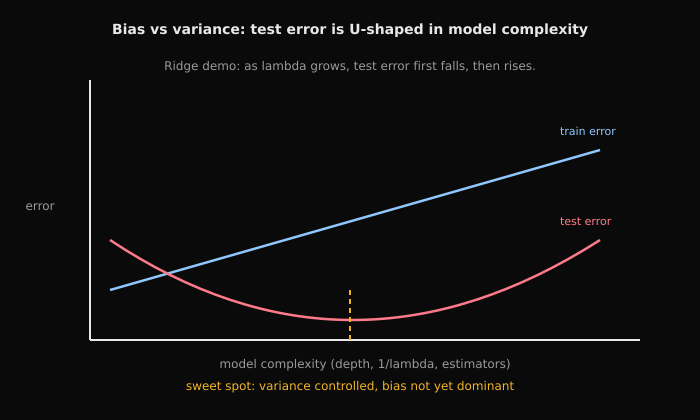
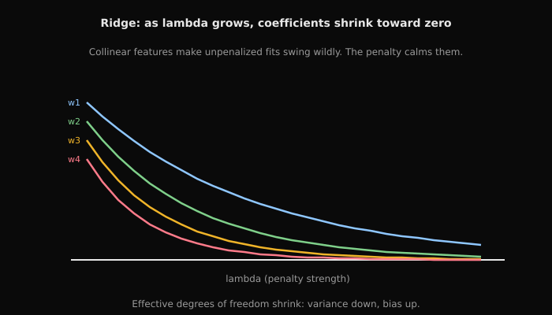
5. The common misunderstanding. Beginners think "convex" means "easy". Then perfectly separable data surprises them: it sends logistic regression weights to infinity. With no penalty, the loss keeps decreasing as weights grow, so the optimum is at infinity. The lab flags this as a FAANG gotcha.
The second misunderstanding: treating the sigmoid as magic. It is just the inverse of the logit link. That is the GLM viewpoint the lab's intuition table teaches.
How to read this diagram
- Left: the sigmoid curve maps any real score z into (0, 1). It saturates for large |z|, which is why gradients vanish on confident mistakes and why the stable implementation matters.
- Right: the binary cross-entropy loss as a function of the weights is a convex bowl. The green dot is the unique global minimum.
- The red arrow is one gradient-descent step: it always moves downhill, and convexity guarantees downhill eventually reaches the bottom.
- Why convex: the Hessian H = (1/n) X^T S X with S = diag(p(1-p)) is PSD. A PSD Hessian everywhere means the function is convex. The lab verifies this empirically.
7. Interview relevance. The lab's own interview angles: "Derive the logistic regression gradient". "How do you compute log(1+exp(z)) stably".
"Why is Newton fast but expensive". "What breaks under perfect separation". The GLM table (distribution plus link per task type) is the five-minute answer to "how do you pick a model for a new problem".
Key takeaways
- The logistic regression gradient is X^T(p - y)/n: features transposed times errors. Derive it, do not memorize it.
- The Hessian (1/n) X^T S X is PSD, so the loss is convex with one global minimum.
- Implement the sigmoid and the loss in numerically stable form. Naive versions overflow.
- Ridge tames collinearity; the GLM view (distribution plus link) organizes regression, classification, and counts.
Design prompt
- Derive the gradient of binary cross-entropy and show the Hessian is PSD.
- Data is perfectly separable. What happens to logistic regression weights, and what is the fix?
- Your features are highly correlated and OLS coefficients swing wildly. Diagnose and fix.
Practice this in the logistic regression lab (stability, gradient, Hessian, convexity) and the linear regression and GLM lab (closed form, GD, ridge, bias-variance).
Concept 2: Calibration, metrics, and thresholds under imbalance
1. What it is, in plain words. Calibration means predicted probabilities match observed frequencies: among cases scored 0.7, about 70% are positive. The ECE (expected calibration error) is the average gap between predicted and actual rates across probability bins. Temperature scaling divides logits by a learned temperature T to fix miscalibration. A PR curve plots precision against recall across thresholds; ROC-AUC measures ranking quality independent of threshold.
2. Why it exists. A model that only ranks is half a model. Business decisions need probabilities: approve the loan, flag the transaction, page the doctor.
An uncalibrated 0.9 that is right 60% of the time corrupts every downstream decision. Under class imbalance, the default 0.5 threshold is almost never the right operating point. The lab treats probabilities as first-class outputs for exactly this reason.
3. How it works, step by step. Step one: get predicted probabilities on held-out data. Step two: bin them (ten bins is typical), and per bin compute the mean predicted probability and the empirical positive rate.
Step three: plot actual versus predicted. The diagonal is perfect calibration. Step four: compute ECE as the bin-size-weighted average absolute gap. Step five: fit temperature scaling on a validation split by minimizing NLL over T; T above 1 softens overconfident outputs. Step six: pick the decision threshold by minimizing expected cost, c_fp times FP plus c_fn times FN, not by maximizing accuracy.
4. Concrete numbers. A fraud model with 1% positives: at threshold 0.5 it might show 99% accuracy with 10% recall, catching one fraud in ten. Moving the threshold can lift recall to 80% while precision drops to 5%, when a missed fraud costs 100x a false alarm. Whether that trade is correct is a business decision the modeler must frame. That is the lab's interview angle on translating outputs to decisions.
PR-AUC on such data might be 0.45 while ROC-AUC is 0.97; the PR number is the honest one.
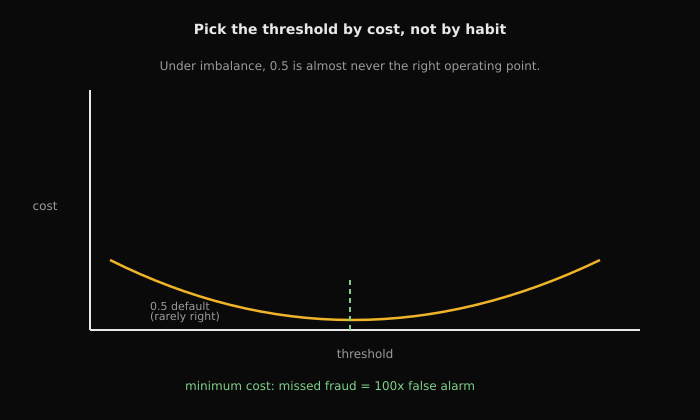
5. The common misunderstanding. The lab's headline gotcha: a good ROC-AUC model can be poorly calibrated. Ranking and calibration are different properties, and interviews test whether you conflate them.
The second misunderstanding is tuning the threshold on the test set. That is just another form of overfitting. Choose thresholds on validation, then freeze them.
How to read this diagram
- Axes: horizontal is the mean predicted probability inside each bin, vertical is the fraction of positives actually observed in that bin.
- The dashed green diagonal is perfect calibration: "70% confident" means 70% of those cases are positive.
- The red curve is an overconfident model: its predicted probabilities run higher than reality in every bin.
- The gold dots are the bins; their vertical distance from the diagonal, weighted by bin size, sums to the ECE (expected calibration error).
- The lab's key gotcha, shown at the bottom: a model can rank perfectly (great ROC-AUC) while sitting far off the diagonal. Temperature scaling pulls the curve back toward the line.
7. Interview relevance. "When is PR-AUC the right metric?", "translate model outputs to business decisions", and the cost-based threshold task are the lab's interview angles. The expected performance: state the metric for the problem (not the model), justify it from costs, and show the reliability curve.
Key takeaways
- Calibration is about honesty of probabilities; ROC-AUC is about ranking. A model can have one without the other.
- Read calibration off a reliability curve; summarize it with ECE; fix it with temperature scaling.
- Under imbalance, prefer PR-AUC and recall-oriented metrics; accuracy is a trap.
- Choose thresholds by minimizing expected business cost on validation data, never on test.
Design prompt
- Your model has 0.97 ROC-AUC and 0.45 PR-AUC on a fraud problem. Which number do you report, and why?
- A false negative costs 100x a false positive. How do you pick the threshold?
- Explain temperature scaling: what it changes, what it cannot fix.
Practice this in the calibration lab (metrics, PR curves, reliability and ECE, temperature scaling, cost-based thresholds).
Concept 3: Trees, forests, and boosting
1. What it is, in plain words. A decision tree splits data recursively on feature thresholds, predicting the majority class or mean in each leaf. Gini impurity and entropy measure how mixed a node is; splits maximize the impurity drop (information gain). Bagging trains many trees on bootstrapped samples and averages them (random forests). Boosting trains shallow trees sequentially, each fitting the previous ensemble's residual errors.
2. Why it exists. Trees handle nonlinearity, mixed feature types, and missing values with minimal preprocessing, which is why they dominate tabular competitions. Single trees overfit, so the field invented two corrections with opposite philosophies: bagging cuts variance by averaging, boosting cuts bias by sequential correction. Interviewers probe this pair because the contrast reveals whether you understand bias and variance operationally.
3. How it works, step by step. Step one: at each node, evaluate candidate thresholds from sorted unique feature values, skipping splits that leave an empty child. Step two: pick the (feature, threshold) with the largest impurity drop and recurse. Step three: control depth. The lab sweeps max_depth to show the overfitting curve directly.
Step four: for forests, bootstrap the rows, subsample the features at each split, grow deep trees, and vote. Step five: for boosting, fit a shallow tree to the current residuals. Shrink its contribution by the learning rate. Add it in, and repeat. Watch validation error turn up if you use too many estimators.
4. Concrete numbers. On the lab's nonlinear synthetic data, a depth-2 stump might score 78%. A depth-12 tree hits 99% on training but 84% on validation. That is the classic overfit gap.
A random forest of 200 trees typically lands near 92% validation by averaging away the variance. For boosting, validation error often bottoms around 100 to 300 shallow trees and then climbs; the learning rate trades speed for that minimum's depth.
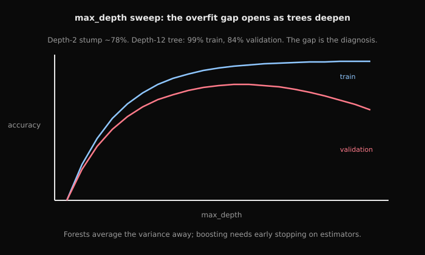
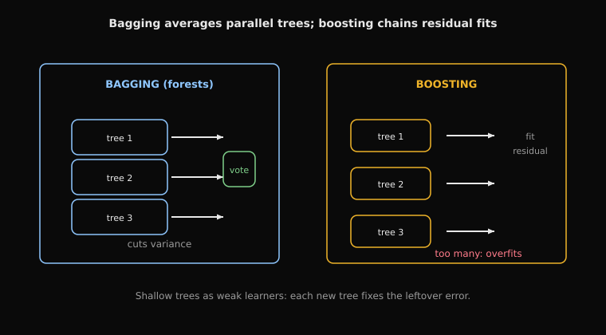
How to read this diagram
- Left panel, bagging: three deep trees train in parallel on bootstrap samples, then vote. Averaging cuts variance.
- Right panel, boosting: tree 1 fits roughly, tree 2 fits the leftover residual, tree 3 fits the new residual. Each tree fixes the previous error.
- Boosting uses shallow trees as weak learners. The learning rate shrinks each contribution.
- The red warning: too many estimators and validation error turns back up. That is why boosting needs early stopping.
5. The common misunderstanding. Beginners read feature_importances_ as truth. The lab's gotcha: under correlated features, importance splits arbitrarily across the correlated set, so the ranking misleads. The second misunderstanding is that more boosting rounds are always better; boosting overfits with too many estimators. That is the lab's checkpoint question.
The third: trusting a tree's validation accuracy when a leaky feature is present. Trees exploit leakage aggressively. A suspicious jump is a diagnostic, not a victory.
How to read this diagram
- Left: a parent node with Gini 0.48 splits on feature x_j at threshold t. The weighted child impurity is lower; the difference is the information gain. The best split maximizes it.
- Candidate thresholds come from sorted unique feature values. Skip splits that leave an empty child (a lab gotcha).
- Right: boosting fits tree 1 roughly, then tree 2 fits the leftover error (residual), then tree 3 fits what remains. Shallow trees are the weak learners; too many rounds overfits.
- Bagging (random forests) is the contrast: many deep trees trained on bootstrapped samples, averaged by vote, which cuts variance instead of bias.
- Bottom: the leakage warning. Trees happily memorize, so they choose a leaky feature at the root and validation accuracy jumps. That jump is a diagnostic, not a victory.
7. Interview relevance. "Why are shallow trees used as weak learners?", "how do you prevent overfitting in trees?", and the feature-importance gotcha are the lab's interview angles. The XGBoost knob explanations (subsample, colsample, learning rate, max_depth) are the expected vocabulary for any applied ML interview.
Key takeaways
- Trees split to maximize impurity drop; thresholds come from sorted unique values, never from thin air.
- Bagging (forests) cuts variance by averaging deep trees; boosting cuts bias by sequentially fitting residuals.
- Depth, estimator count, learning rate, and sampling knobs each move the bias-variance trade; tune against validation.
- Distrust feature importances under correlated features, and distrust any accuracy jump that smells like leakage.
Design prompt
- Compute Gini impurity for a node with 30 positives and 70 negatives, then the gain of a proposed split.
- Contrast bagging and boosting on bias, variance, and sensitivity to noise.
- Your boosted model's validation error rises after 500 trees. What do you change?
Practice this in the decision trees lab (impurity, stumps, depth sweep, leakage demo) and the ensembles lab (forests, boosting, XGBoost knobs).
Concept 4: Failure modes, leakage, and honest validation
1. What it is, in plain words. Leakage is training on information unavailable at prediction time. A spurious correlation is a predictive pattern that will not hold where you deploy the model. Dataset shift is drift between the training distribution and the live one.
A baseline is the simplest model that could work, and a holdout set is data the model never sees until final evaluation. Cross-validation rotates the validation role across data folds for a stabler estimate.
2. Why it exists. This is the concept that separates engineers who ship from engineers who demo. Every failure mode in this chapter produces the same signature: wonderful offline numbers, broken production behavior. The lab makes you create each failure deliberately (a leaky feature, a shifted distribution, a downsampled minority class) so the symptoms become recognizable on sight instead of in a postmortem.
3. How it works, step by step. Step one: establish the baseline first. Majority-class accuracy and a simple logistic regression are the numbers every fancier model must beat honestly. Step two: split correctly. A stratified train/holdout split, with the holdout locked away, and cross-validation on the training portion only.
Step three: build preprocessing inside a pipeline fitted on training folds only; fitting a scaler or imputer on the full data before splitting leaks. Step four: hunt leakage by constructing it on purpose and watching the metric inflate; that inflated number is what a real leak looks like. Step five: slice the errors by meaningful groups and simulate shift, so you see overall metrics hide slice failures.
4. Concrete numbers. The lab's leakage demo: adding a label-derived feature jumps validation accuracy toward 100%, the tell-tale signature. The imbalance demo: downsampling positives to 5% keeps accuracy near 95% while recall collapses toward zero. That is the exact trap behind the "95% accuracy on fraud detection" question. The shift demo: multiplying Fare in the validation set moves performance by several points, previewing what production drift does over weeks.
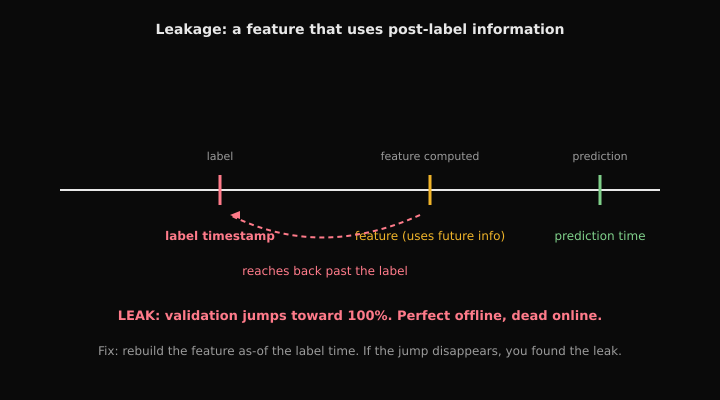
How to read this diagram
- The red tick is the label timestamp: the moment the outcome becomes known.
- The amber tick is a feature computed AFTER the label, using information from the future.
- The dashed red arrow shows the feature reaching back past the label. That is the leak.
- Symptom: validation accuracy jumps toward 100%. Perfect offline, dead online.
- Fix: rebuild the feature as-of the label time. If the jump disappears, you found the leak.
5. The common misunderstanding. Beginners believe a high validation score means a good model. The lab's position: a high score means a good model or a leak, and you must rule out the leak first.
The second misunderstanding: tuning repeatedly on the validation set and calling the result honest. The lab's gotcha says you overfit to the validation set itself. That is why the holdout stays locked until the end.
How to read this diagram
- Leakage: future information hides in training features. Symptom is perfect offline scores and dead production. Fix is as-of timestamp discipline and a truly untouched holdout.
- Spurious correlation: the model learns a proxy instead of the cause. Symptom is strong overall metrics with collapsed slice metrics. Fix is slice analysis and stressing the proxy.
- Dataset shift: the production distribution drifts away from training. Symptom is slow decay after launch. Fix is input monitoring and retraining triggers.
- Imbalance trap: accuracy lies under skew. Symptom is 95% accuracy with zero recall. Fix is PR-AUC, recall, and cost-based thresholds from Concept 2.
7. Interview relevance. Two classic FAANG traps from this lab. Trap one asks about 95% accuracy on fraud detection. Trap two asks why a model can look good overall but fail badly in slices. The expected answer names the failure mode, the diagnostic, and the fix, in that order.
Key takeaways
- Baseline first, split correctly, pipeline everything: the boring discipline that makes numbers trustworthy.
- Fit preprocessing on training folds only; fit it on all the data and you have leaked.
- Learn the signatures: leakage inflates, shift decays, imbalance flatters accuracy, slices expose proxies.
- Lock a holdout set away and touch it once. Repeated validation tuning overfits with extra steps.
Design prompt
- Your validation accuracy jumped from 82% to 99% after adding one feature. Walk me through your reaction.
- Design the validation scheme for a fraud model retrained weekly. What goes where, and what never touches what?
- Overall accuracy is 90% but one slice is at 55%. What happened, and what do you do?
Practice this in the failure-modes lab (leakage, slices, shift, imbalance on Titanic) and the capstone lab (the full honest pipeline).
Lab walkthroughs
Logistic Regression Gradient & Convexity Medium
This lab is the mathematical heart of the volume. It implements the sigmoid and the binary cross-entropy loss in numerically stable form. It derives and codes the gradient X^T(p - y)/n. It verifies it with central finite differences. Then it attacks convexity directly: Hessian-vector products without forming H, and an empirical PSD check. It is the practice ground for Concept 1.
Watch for the two named bug sites (missing 1/n constants, shape and broadcast mistakes) and the two named interview traps (stable log(1+exp(z)), and perfectly separable data pushing weights toward infinity). The closing GD-versus-Newton comparison sets up the optimization thinking that later volumes build on.
Derive and implement logistic regression correctly (loss, gradient, Hessian intuition) and explain why the loss is convex.
Tasks (8)
Task 1 Dataset & Setup
Logistic Regression Gradient & Convexity , Student Lab
Complete all TODOs. This lab is math-first and stability-first.
Section 0 , Synthetic Dataset
We’ll create a binary classification dataset with both separable and non-separable regimes.

Starter code
import numpy as np
def check(name: str, cond: bool):
if not cond:
raise AssertionError(f'Failed: {name}')
print(f'OK: {name}')
rng = np.random.default_rng(0)
def make_data(n=400, d=5, separable=False):
X = rng.standard_normal((n, d))
w_true = rng.standard_normal(d)
logits = X @ w_true
if separable:
y = (logits > 0).astype(int)
else:
# add noise so it's not perfectly separable
logits = logits + 0.5 * rng.standard_normal(n)
probs = 1 / (1 + np.exp(-logits))
y = (rng.random(n) < probs).astype(int)
return X, y, w_true
X, y, w_true = make_data(separable=False)
check('shapes', X.ndim==2 and y.ndim==1 and X.shape[0]==y.shape[0])
X.shape, y.mean()Solution and rationale
Solution
import numpy as np
def check(name: str, cond: bool):
if not cond:
raise AssertionError(f'Failed: {name}')
print(f'OK: {name}')
rng = np.random.default_rng(0)
def make_data(n=400, d=5, separable=False):
X = rng.standard_normal((n, d))
w_true = rng.standard_normal(d)
logits = X @ w_true
if separable:
y = (logits > 0).astype(int)
else:
logits = logits + 0.5 * rng.standard_normal(n)
probs = 1 / (1 + np.exp(-logits))
y = (rng.random(n) < probs).astype(int)
return X, y, w_true
X, y, w_true = make_data(separable=False)
check('shapes', X.ndim==2 and y.ndim==1 and X.shape[0]==y.shape[0])Instructor explanation
Logistic Regression Gradient & Convexity , Instructor (Solutions + Rationale)
Runs top-to-bottom.
Section 0 , Synthetic Dataset
Rationale: plotting the first two features gives a fast visual check of overlap and class balance before deriving gradients.

Task 2 Stable sigmoid Sigmoid + Stable Loss
Section 1 , Sigmoid + Stable Loss
Task 1.1: Stable sigmoid
Explain: Why does sigmoid saturate for large |z| and what does that do to gradients?
Starter code
def sigmoid(z):
# TODO
...
z = np.array([-1000.0, -10.0, 0.0, 10.0, 1000.0])
p = sigmoid(z)
check('in_0_1', np.all((p >= 0) & (p <= 1)))
check('monotonic', np.all(np.diff(p) >= 0))Hints (1)
- # - Use
np.where(z>=0, ...)trick to avoid overflow.
Test code
check('in_0_1', np.all((p >= 0) & (p <= 1)))
check('monotonic', np.all(np.diff(p) >= 0))Checks
- check('in_0_1', np.all((p >= 0)
- check('monotonic', np.all(np.diff(p)
Solution and rationale
Solution
def sigmoid(z):
z = np.asarray(z)
return np.where(z >= 0, 1/(1+np.exp(-z)), np.exp(z)/(1+np.exp(z)))
z = np.array([-1000.0, -10.0, 0.0, 10.0, 1000.0])
p = sigmoid(z)
check('in_0_1', np.all((p >= 0) & (p <= 1)))
check('monotonic', np.all(np.diff(p) >= 0))
# Rationale: stable branching avoids overflow in exp for large negative logits.Why this works
stable branching avoids overflow in exp for large negative logits.
Instructor explanation
Section 1 , Stable sigmoid + loss
Task 3 Stable binary cross-entropy loss Sigmoid + Stable Loss
Task 1.2: Stable binary cross-entropy loss
We use labels y in {0,1}.
Loss per example: -y log(p) - (1-y) log(1-p) where p=sigmoid(z).
Interview Angle: explain a stable form of log-loss.
Starter code
def bce_loss(y, p):
# TODO
...
# sanity: loss is finite
z = X @ np.zeros(X.shape[1])
p = sigmoid(z)
L = bce_loss(y, p)
print('loss', L)
check('finite_loss', np.isfinite(L))Hints (2)
- # - Clip p to [eps, 1-eps]
- # - Alternatively use softplus: log(1+exp(z))
Test code
check('finite_loss', np.isfinite(L))Checks
- check('finite_loss', np.isfinite(L)
Solution and rationale
Solution
def bce_loss(y, p):
eps = 1e-12
p = np.clip(p, eps, 1-eps)
y = y.astype(float)
return float(-np.mean(y* np.log(p) + (1-y)* np.log(1-p)))
L = bce_loss(y, sigmoid(X @ np.zeros(X.shape[1])))
check('finite_loss', np.isfinite(L))Why this works
clipping prevents log(0) and keeps loss finite.
Task 4 Implement loss and gradient Gradient (Derive → Implement → Check)
Section 2 , Gradient (Derive → Implement → Check)
Task 2.1: Derive the gradient (write in markdown)
Show that for loss averaged over n examples: grad = X^T (p - y) / n
Checkpoint: What is the shape of grad?
Task 2.2: Implement loss and gradient
FAANG gotcha: ensure y is 0/1, not -1/+1.
Starter code
def logreg_loss_and_grad(X, y, w):
# TODO
...
w0 = rng.standard_normal(X.shape[1])
loss, grad = logreg_loss_and_grad(X, y, w0)
print('loss', loss, 'grad_norm', np.linalg.norm(grad))
check('grad_shape', grad.shape == w0.shape)
check('finite', np.isfinite(loss) and np.all(np.isfinite(grad)))Hints (4)
- # - z = X @ w
- # - p = sigmoid(z)
- # - loss = BCE
- # - grad = X.T @ (p - y) / n
Test code
check('grad_shape', grad.shape == w0.shape)
check('finite', np.isfinite(loss) and np.all(np.isfinite(grad)))Checks
- check('grad_shape', grad.shape == w0.shape)
- check('finite', np.isfinite(loss)
Solution and rationale
Solution
def logreg_loss_and_grad(X, y, w):
z = X @ w
p = sigmoid(z)
loss = bce_loss(y, p)
grad = (X.T @ (p - y)) / X.shape[0]
return loss, grad
w0 = rng.standard_normal(X.shape[1])
loss, grad = logreg_loss_and_grad(X, y, w0)
print('loss', loss, 'grad_norm', np.linalg.norm(grad))
check('grad_shape', grad.shape == w0.shape)
check('finite', np.isfinite(loss) and np.all(np.isfinite(grad)))
# Rationale: gradient simplifies to X^T (p - y) / n by chain rule.Why this works
gradient simplifies to X^T (p - y) / n by chain rule.
Instructor explanation
Section 2 , Loss + gradient + gradient check
Task 5 Numerical gradient check (finite differences) Gradient (Derive → Implement → Check)
Task 2.3: Numerical gradient check (finite differences)
Compare your analytic gradient to a central-difference numerical gradient.
Checkpoint: Why can eps too small make the check worse?
Starter code
def numerical_grad(f, w, eps=1e-5):
# TODO
...
f = lambda v: logreg_loss_and_grad(X, y, v)[0]
g_num = numerical_grad(f, w0)
_, g = logreg_loss_and_grad(X, y, w0)
max_abs = np.max(np.abs(g - g_num))
print('max_abs_diff', max_abs)
check('grad_check', max_abs < 1e-5)Hints (1)
- central difference
Test code
check('grad_check', max_abs < 1e-5)Checks
- check('grad_check', max_abs < 1e-5)
Solution and rationale
Solution
def numerical_grad(f, w, eps=1e-5):
w = np.asarray(w, dtype=float)
g = np.zeros_like(w)
for i in range(w.size):
e = np.zeros_like(w)
e[i] = 1.0
g[i] = (f(w + eps * e) - f(w - eps * e)) / (2 * eps)
return g
f = lambda v: logreg_loss_and_grad(X, y, v)[0]
g_num = numerical_grad(f, w0)
_, g = logreg_loss_and_grad(X, y, w0)
max_abs = np.max(np.abs(g - g_num))
print('max_abs_diff', max_abs)
check('grad_check', max_abs < 1e-5)
# Rationale: finite differences validate the analytic gradient implementation.Why this works
finite differences validate the analytic gradient implementation.
Task 6 Hessian-vector product (HVP) Convexity & Hessian Intuition
Section 3 , Convexity & Hessian Intuition
Task 3.1: Hessian-vector product (HVP)
For logistic regression: H = (1/n) X^T S X where S = diag(p(1-p)).
Implement HVP: compute H@v without building full H explicitly.
- s = p*(1-p)
- compute Xv then multiply by s then X^T
Starter code
def hvp(X, y, w, v):
# TODO
...
v = rng.standard_normal(X.shape[1])
Hv = hvp(X, y, w0, v)
check('hvp_shape', Hv.shape == v.shape)
check('hvp_finite', np.all(np.isfinite(Hv)))Hints (1)
- s = p*(1-p) compute Xv then multiply by s then X^T
Test code
check('hvp_shape', Hv.shape == v.shape)
check('hvp_finite', np.all(np.isfinite(Hv)))Checks
- check('hvp_shape', Hv.shape == v.shape)
- check('hvp_finite', np.all(np.isfinite(Hv)
Solution and rationale
Solution
def hvp(X, y, w, v):
z = X @ w
p = sigmoid(z)
s = p * (1 - p)
Xv = X @ v
return (X.T @ (s * Xv)) / X.shape[0]
v = rng.standard_normal(X.shape[1])
Hv = hvp(X, y, w0, v)
check('hvp_shape', Hv.shape == v.shape)
check('hvp_finite', np.all(np.isfinite(Hv)))
# Rationale: this computes H@v directly without materializing the full Hessian.Why this works
this computes H@v directly without materializing the full Hessian.
Instructor explanation
Section 3 , Hessian-vector product + PSD
Task 7 Empirical PSD check Convexity & Hessian Intuition
Task 3.2: Empirical PSD check
Check that v^T H v >= 0 for random v (PSD).
Explain: Why does PSD imply convexity?
Starter code
def vHv(X, y, w, v):
return float(v @ hvp(X, y, w, v))
vals = []
for _ in range(50):
v = rng.standard_normal(X.shape[1])
vals.append(vHv(X, y, w0, v))
print('min vHv', min(vals))
check('psd', min(vals) > -1e-8)Test code
check('psd', min(vals) > -1e-8)Checks
- check('psd', min(vals)
Solution and rationale
Solution
def vHv(X, y, w, v):
return float(v @ hvp(X, y, w, v))
vals = []
for _ in range(50):
v = rng.standard_normal(X.shape[1])
vals.append(vHv(X, y, w0, v))
print('min vHv', min(vals))
check('psd', min(vals) > -1e-8)
# Rationale: v^T H v >= 0 for all v is the PSD condition, implying convexity.Why this works
v^T H v >= 0 for all v is the PSD condition, implying convexity.
Task 8 One step of GD vs Newton (conceptual) Optimization (Bonus)
Section 4 , Optimization (Bonus)
Task 4.1: One step of GD vs Newton (conceptual)
Implement one gradient descent step. (Newton step is optional.)
FAANG gotcha: perfectly separable data can push weights to infinity; explain why.
Section 4 , GD Step
Gradient descent update rule:
w' = w - η ∇L(w)
Where:
w= current weightsw'= updated weights after one optimization stepη= learning rate (step size)∇L(w)= gradient of the loss with respect tow
Newton (Hessian) step notation:
w' = w - H(w)^{-1} ∇L(w)
Where:
H(w) = ∇²L(w)= Hessian matrix (second derivatives)H(w)^{-1} ∇L(w)rescales the gradient using local curvature
Interpretation: gradient descent uses only slope; Newton step uses slope + curvature for a more curvature-aware update.
Starter code
def gd_step(X, y, w, lr):
# TODO
...
w1 = gd_step(X, y, w0, lr=0.1)
loss0, _ = logreg_loss_and_grad(X, y, w0)
loss1, _ = logreg_loss_and_grad(X, y, w1)
print('loss0', loss0, 'loss1', loss1)
check('decreased', loss1 <= loss0 + 1e-12)Test code
check('decreased', loss1 <= loss0 + 1e-12)Checks
- check('decreased', loss1 <= loss0 + 1e-12)
Solution and rationale
Solution
def gd_step(X, y, w, lr):
_, g = logreg_loss_and_grad(X, y, w)
return w - lr * g
w1 = gd_step(X, y, w0, lr=0.1)
loss0, _ = logreg_loss_and_grad(X, y, w0)
loss1, _ = logreg_loss_and_grad(X, y, w1)
print('loss0', loss0, 'loss1', loss1)
check('decreased', loss1 <= loss0 + 1e-12)
# Rationale: for a smooth convex objective, a small enough LR should reduce the loss.Why this works
for a smooth convex objective, a small enough LR should reduce the loss.
Checkpoints
- Why does naive
exp(-z)overflow? - What does sigmoid saturating imply for gradients?
- Why does the gradient simplify to
X^T (p - y) / n? - What is the interpretation of
(p - y)? - Why is the Hessian PSD?
- What does PSD imply about convexity?
Interview angles
- How do you compute
log(1 + exp(z))stably? - Why is Newton fast but expensive?
- What breaks if data is perfectly separable?
Gotchas
- Most bugs: missing
1/nconstants or shape/broadcast mistakes.
Interview signals
| Company | Confidence | Topics | Sources |
|---|---|---|---|
| high | classification/regression, trees/ensembles, model evaluation | Google MLE interview guide; Top machine learning interview questions | |
| Amazon | high | applied ML models, feature engineering, offline/online evaluation | Amazon MLE interview guide; Amazon central ML applied scientist role |
| Meta | medium | ranking/classification, ML design, optimization tradeoffs | Meta ML full-loop prep; Meta MLE interview guide |
Source: AI Lab, https://ai.thes30.com/problems/w3-d1-logreg-gradient-convexity.
Linear Regression & GLMs Medium
This lab is the regression counterpart to the logistic lab. It fits OLS in closed form with solve (never the explicit inverse). It inspects residuals the way an interviewer expects. It implements MSE with gradient descent and compares against the closed form. Then it adds ridge in both forms and shows the bias-variance trade on a train/test split. It is the second half of Concept 1.
Watch for the collinearity built into the synthetic data. It is there so ridge has something to fix. The "why does ridge help with collinearity" angle is the payoff. The closing GLM intuition table (distribution plus link per task) is the compact mental model for choosing models.
Build strong, interview-ready intuition for linear regression, regularization, and GLM thinking (loss functions, link functions, assumptions).
Tasks (8)
Task 1 Dataset & Setup
Linear Regression & GLMs , Student Lab
Complete all TODOs. Avoid sklearn for core parts.
Section 0 , Synthetic Dataset (with collinearity)
We generate data where features can be highly correlated to motivate ridge.
Starter code
import numpy as np
def check(name: str, cond: bool):
if not cond:
raise AssertionError(f'Failed: {name}')
print(f'OK: {name}')
rng = np.random.default_rng(0)
def make_regression(n=250, d=5, noise=0.5, collinear=True):
X = rng.standard_normal((n, d))
if collinear and d >= 2:
X[:, 1] = X[:, 0] + 0.05 * rng.standard_normal(n)
w_true = rng.standard_normal(d)
y = X @ w_true + noise * rng.standard_normal(n)
return X, y, w_true
X, y, w_true = make_regression()
n, d = X.shape
check('shapes', y.shape == (n,))
print('corr(x0,x1)=', np.corrcoef(X[:,0], X[:,1])[0,1])Solution and rationale
Solution
import numpy as np
def check(name: str, cond: bool):
if not cond:
raise AssertionError(f'Failed: {name}')
print(f'OK: {name}')
rng = np.random.default_rng(0)
def make_regression(n=250, d=5, noise=0.5, collinear=True):
X = rng.standard_normal((n, d))
if collinear and d >= 2:
X[:, 1] = X[:, 0] + 0.05 * rng.standard_normal(n)
w_true = rng.standard_normal(d)
y = X @ w_true + noise * rng.standard_normal(n)
return X, y, w_true
X, y, w_true = make_regression()
n, d = X.shape
check('shapes', y.shape == (n,))
print('corr(x0,x1)=', np.corrcoef(X[:,0], X[:,1])[0,1])Instructor explanation
Linear Regression & GLMs , Instructor (Solutions + Rationale)
Runs top-to-bottom.
Task 2 Closed-form w_hat using solve OLS Closed Form
Section 1 , OLS Closed Form
Task 1.1: Closed-form w_hat using solve
Checkpoint: Why is explicit inverse discouraged?
Starter code
# TODO
XtX = ...
Xty = ...
w_hat = ...
print(w_true)
print(w_hat)
check('w_shape', w_hat.shape == (d,))Hints (1)
XtX = X.T@X,Xty = X.T@y,np.linalg.solve(XtX, Xty)
Test code
check('w_shape', w_hat.shape == (d,))Checks
- check('w_shape', w_hat.shape == (d,)
Solution and rationale
Solution
XtX = X.T @ X
Xty = X.T @ y
w_hat = np.linalg.solve(XtX, Xty)
check('w_shape', w_hat.shape == (d,))Task 3 Evaluate fit + residuals OLS Closed Form
Task 1.2: Evaluate fit + residuals
Compute:
- predictions y_pred
- MSE
- residual mean and std
Interview Angle: What does a structured residual pattern imply (e.g., nonlinearity)?
Starter code
# TODO
y_pred = ...
mse = ...
resid = ...
print('mse', mse, 'resid_mean', resid.mean(), 'resid_std', resid.std())
check('finite', np.isfinite(mse))Test code
check('finite', np.isfinite(mse))Checks
- check('finite', np.isfinite(mse))
Solution and rationale
Solution
y_pred = X @ w_hat
mse = np.mean((y_pred - y) ** 2)
resid = y - y_pred
print('mse', mse, 'resid_mean', resid.mean(), 'resid_std', resid.std())
check('finite', np.isfinite(mse))Why this works
scaling affects Lipschitz constant of gradient -> convergence speed depends on lr and conditioning.
Task 4 Implement MSE loss + gradient Gradient Descent
Section 2 , Gradient Descent
Task 2.1: Implement MSE loss + gradient
Loss = mean((Xw-y)^2), grad = (2/n) X^T(Xw-y)
FAANG gotcha: shapes and constants.
Starter code
def mse_loss_and_grad(X, y, w):
# TODO
...
w0 = np.zeros(d)
loss0, g0 = mse_loss_and_grad(X, y, w0)
check('grad_shape', g0.shape == (d,))
check('finite_loss', np.isfinite(loss0))Test code
check('grad_shape', g0.shape == (d,))
check('finite_loss', np.isfinite(loss0))Checks
- check('grad_shape', g0.shape == (d,))
- check('finite_loss', np.isfinite(loss0))
Solution and rationale
Solution
def mse_loss_and_grad(X, y, w):
r = X @ w - y
loss = float(np.mean(r * r))
grad = (2.0 / X.shape[0]) * (X.T @ r)
return loss, grad
w0 = np.zeros(d)
loss0, g0 = mse_loss_and_grad(X, y, w0)
check('grad_shape', g0.shape == (d,))
check('finite_loss', np.isfinite(loss0))Why this works
ridge reduces variance by shrinking weights; helps under collinearity/ill-conditioning.
Task 5 Train with GD + compare to closed-form Gradient Descent
Task 2.2: Train with GD + compare to closed-form
Checkpoint: How does feature scaling affect GD?
Starter code
def train_gd(X, y, lr=0.05, steps=500):
# TODO
...
w_gd, losses = train_gd(X, y, lr=0.05, steps=500)
print(w_true)
print(w_gd)
print('final_loss', losses[-1])
print('||w_gd-w_hat||', np.linalg.norm(w_gd - w_hat))
check('loss_decreases', losses[-1] <= losses[0])Test code
check('loss_decreases', losses[-1] <= losses[0])Checks
- check('loss_decreases', losses[-1] <= losses[0])
Solution and rationale
Solution
def train_gd(X, y, lr=0.05, steps=500):
w = np.zeros(X.shape[1])
losses = []
for _ in range(steps):
loss, g = mse_loss_and_grad(X, y, w)
losses.append(loss)
w = w - lr * g
return w, losses
w_gd, losses = train_gd(X, y, lr=0.05, steps=500)
print('final_loss', losses[-1])
print('||w_gd-w_hat||', np.linalg.norm(w_gd - w_hat))
check('loss_decreases', losses[-1] <= losses[0])Why this works
ridge reduces variance by shrinking weights; helps under collinearity/ill-conditioning.
Task 6 Ridge closed-form + Ridge GD Ridge Regression (L2)
Section 3 , Ridge Regression (L2)
Task 3.1: Ridge closed-form + Ridge GD
Use a matching objective for both methods:
L(w) = 0.5 ||Xw - y||^2 + (λ/2) ||w||^2
- Closed-form:
w = (X^T X + λI)^{-1} X^T y - Gradient:
∇L = X^T(Xw - y) + λw
Implement both and compare the learned weights.
Interview Angle: Why is objective consistency important when comparing solvers?
Starter code
def ridge_solve(X, y, lam):
# TODO
...
def ridge_loss_and_grad(X, y, w, lam):
# TODO
...
def train_ridge_gd(X, y, lam=1.0, lr=0.002, steps=1500):
# TODO
...
lam = 1.0
w_ridge_closed = ridge_solve(X, y, lam=lam)
w_ridge_gd, ridge_losses = train_ridge_gd(X, y, lam=lam, lr=0.002, steps=1500)
print(w_true)
print(w_gd)
print(w_ridge_gd)
print('ridge_final_loss', ridge_losses[-1])
print('||w_gd - w_closed||', np.linalg.norm(w_ridge_gd - w_ridge_closed))
check('ridge_shape', w_ridge_closed.shape == (d,))
check('ridge_loss_decreases', ridge_losses[-1] <= ridge_losses[0])
check('ridge_close_to_closed', np.linalg.norm(w_ridge_gd - w_ridge_closed) < 0.1)Test code
check('ridge_shape', w_ridge_closed.shape == (d,))
check('ridge_loss_decreases', ridge_losses[-1] <= ridge_losses[0])
check('ridge_close_to_closed', np.linalg.norm(w_ridge_gd - w_ridge_closed) < 0.1)Checks
- check('ridge_shape', w_ridge_closed.shape == (d,))
- check('ridge_loss_decreases', ridge_losses[-1] <= ridge_losses[0])
- check('ridge_close_to_closed', np.linalg.norm(w_ridge_gd - w_ridge_closed) < 0.1)
Solution and rationale
Solution
def ridge_solve(X, y, lam):
d = X.shape[1]
return np.linalg.solve(X.T @ X + lam * np.eye(d), X.T @ y)
def ridge_loss_and_grad(X, y, w, lam):
r = X @ w - y
loss = 0.5 * float(r @ r) + 0.5 * lam * float(w @ w)
grad = X.T @ r + lam * w
return loss, grad
def train_ridge_gd(X, y, lam=1.0, lr=0.002, steps=1500):
w = np.zeros(X.shape[1])
losses = []
for _ in range(steps):
loss, g = ridge_loss_and_grad(X, y, w, lam)
losses.append(loss)
w = w - lr * g
return w, losses
lam = 1.0
w_ridge_closed = ridge_solve(X, y, lam=lam)
w_ridge_gd, ridge_losses = train_ridge_gd(X, y, lam=lam, lr=0.002, steps=1500)
print('ridge_final_loss', ridge_losses[-1])
print('||w_gd - w_closed||', np.linalg.norm(w_ridge_gd - w_ridge_closed))
check('ridge_shape', w_ridge_closed.shape == (d,))
check('ridge_loss_decreases', ridge_losses[-1] <= ridge_losses[0])
check('ridge_close_to_closed', np.linalg.norm(w_ridge_gd - w_ridge_closed) < 0.1)Why this works
ridge reduces variance by shrinking weights; helps under collinearity/ill-conditioning.
Task 7 Bias/variance demo with train/test split Ridge Regression (L2)
Task 3.2: Bias/variance demo with train/test split
Checkpoint: why can test error improve even when train error worsens?
Starter code
# TODO
idx = rng.permutation(n)
train = idx[: int(0.5*n)]
test = idx[int(0.5*n):]
Xtr, ytr = X[train], y[train]
Xte, yte = X[test], y[test]
lams = [0.0, 0.1, 1.0, 10.0]
results = []
for lam in lams:
w = ridge_solve(Xtr, ytr, lam=lam) if lam > 0 else np.linalg.solve(Xtr.T@Xtr, Xtr.T@ytr)
tr_mse = np.mean((Xtr@w - ytr)**2)
te_mse = np.mean((Xte@w - yte)**2)
results.append((lam, tr_mse, te_mse))
print('lam, train_mse, test_mse')
for r in results:
print(r)Solution and rationale
Solution
# TODO
idx = rng.permutation(n)
train = idx[: int(0.5*n)]
test = idx[int(0.5*n):]
Xtr, ytr = X[train], y[train]
Xte, yte = X[test], y[test]
lams = [0.0, 0.1, 1.0, 10.0]
results = []
for lam in lams:
w = ridge_solve(Xtr, ytr, lam=lam) if lam > 0 else np.linalg.solve(Xtr.T@Xtr, Xtr.T@ytr)
tr_mse = np.mean((Xtr@w - ytr)**2)
te_mse = np.mean((Xte@w - yte)**2)
results.append((lam, tr_mse, te_mse))
print('lam, train_mse, test_mse')
for r in results:
print(r)Why this works
ridge reduces variance by shrinking weights; helps under collinearity/ill-conditioning.
Task 8 GLM intuition table GLM Intuition
Section 4 , GLM Intuition
Task 4.1: Match tasks to (distribution, link)
Fill in a table for:
- regression
- binary classification
- count prediction
Explain: what changes when you go from OLS to a GLM?
| Problem | Target type | Distribution | Link | Loss |
|---|---|---|---|---|
| House price | continuous | ? | ? | ? |
| Fraud | binary | ? | ? | ? |
| Clicks per user | count | ? | ? | ? |
Starter code
# Conceptual section: no coding required.
# Write your answer in the explanation box or notes.Hints (3)
- Gaussian + identity link -> linear regression (MSE)
- Bernoulli + logit link -> logistic regression (log loss)
- Poisson + log link -> count model
Solution and rationale
Solution
# Conceptual section: no coding required.Why this works
GLMs keep a linear predictor but model different target distributions via an appropriate link function.
Instructor explanation
| Problem | Target type | Distribution | Link | Loss |
|---|---|---|---|---|
| House price | continuous | Gaussian (Normal) | Identity | MSE |
| Fraud | binary | Bernoulli | Logit (sigmoid inverse) | Binary cross-entropy |
| Clicks per user | count | Poisson | Log | Poisson negative log-likelihood |
Going from OLS to a GLM changes two things:
- You choose a target distribution that matches the data type.
- You use a link function to map the linear predictor into the valid range of the mean.
Checkpoints
- Why prefer
solveover explicit inverse? - When is
X^T Xsingular or ill-conditioned? - What controls convergence speed?
- How does feature scaling affect GD?
- What changes: loss or model form?
Interview angles
- What does a non-random residual pattern imply?
- Why does ridge help with collinearity?
Gotchas
- Missing constants (2/n)
- Shape bugs in gradients
Interview signals
| Company | Confidence | Topics | Sources |
|---|---|---|---|
| high | classification/regression, trees/ensembles, model evaluation | Google MLE interview guide; Top machine learning interview questions | |
| Amazon | high | applied ML models, feature engineering, offline/online evaluation | Amazon MLE interview guide; Amazon central ML applied scientist role |
| Meta | medium | ranking/classification, ML design, optimization tradeoffs | Meta ML full-loop prep; Meta MLE interview guide |
Source: AI Lab, https://ai.thes30.com/problems/w3-d2-linear-regression-glms.
Logistic Regression & Calibration Medium
This lab treats probabilities as first-class outputs. It builds confusion-matrix metrics at a threshold. It approximates PR-AUC. Then it moves to calibration proper.
Reliability curves binned with np.digitize. ECE as the summary number. Temperature scaling fitted on a validation split. Finally threshold selection by minimizing explicit business cost. It is the practice ground for Concept 2.
Watch for the headline gotcha the lab states plainly: a good ROC-AUC model can be poorly calibrated. The interview angle to internalize is translation: model outputs become decisions only through costs and thresholds.
Treat probabilistic outputs as first-class: calibration, class imbalance, thresholding, and metric tradeoffs.
Tasks (6)
Task 1 Dataset & Setup
Logistic Regression & Calibration , Student Lab
We focus on probabilities, not just accuracy.
Section 0 , Synthetic imbalanced data
We simulate logits and labels with imbalance and miscalibration.
Figure: make_probs data overview
<div style="max-width: 70%;"><img src="/images/w3-d3-make-probs-overview.svg" alt="make_probs synthetic data overview" /></div>
Starter code
import numpy as np
def check(name: str, cond: bool):
if not cond:
raise AssertionError(f'Failed: {name}')
print(f'OK: {name}')
rng = np.random.default_rng(0)
def make_probs(n=5000, base_rate=0.05, logit_scale=1.0, miscalibration=1.0):
# Generate true probabilities via latent logits
z = logit_scale * rng.standard_normal(n)
# shift to get desired base rate approximately
z = z + np.log(base_rate/(1-base_rate))
p_true = 1/(1+np.exp(-z))
y = (rng.random(n) < p_true).astype(int)
# observed model probs are miscalibrated by scaling logits
z_model = miscalibration * z
p_model = 1/(1+np.exp(-z_model))
return y, p_model, p_true
y, p_model, p_true = make_probs(miscalibration=2.0)
print('base_rate', y.mean())
check('in_0_1', np.all((p_model>=0) & (p_model<=1)))Solution and rationale
Solution
import numpy as np
def check(name: str, cond: bool):
if not cond:
raise AssertionError(f'Failed: {name}')
print(f'OK: {name}')
rng = np.random.default_rng(0)
def make_probs(n=5000, base_rate=0.05, logit_scale=1.0, miscalibration=1.0):
z = logit_scale * rng.standard_normal(n)
z = z + np.log(base_rate/(1-base_rate))
p_true = 1/(1+np.exp(-z))
y = (rng.random(n) < p_true).astype(int)
z_model = miscalibration * z
p_model = 1/(1+np.exp(-z_model))
return y, p_model, p_true
y, p_model, p_true = make_probs(miscalibration=2.0)
print('base_rate', y.mean())
check('in_0_1', np.all((p_model>=0) & (p_model<=1)))Instructor explanation
Logistic Regression & Calibration , Instructor (Solutions + Rationale)
Task 2 Confusion matrix metrics at a threshold Metrics
Section 1 , Metrics
Task 1.1: Confusion matrix metrics at a threshold
Implement precision, recall, F1 at threshold t.
- y_hat = (p>=t)
- TP/FP/FN
Checkpoint: Why is accuracy misleading under imbalance?
<div style="max-width: 70%;"><img src="/images/w3-d3-precision-recall-tradeoff.svg" alt="Precision vs recall tradeoff" /></div>
Starter code
def metrics_at_threshold(y, p, t):
# TODO
...
m = metrics_at_threshold(y, p_model, t=0.5)
print(m)Hints (1)
- y_hat = (p>=t) TP/FP/FN
Solution and rationale
Solution
def metrics_at_threshold(y, p, t):
y = y.astype(int)
yhat = (p >= t).astype(int)
tp = int(np.sum((yhat==1) & (y==1)))
fp = int(np.sum((yhat==1) & (y==0)))
fn = int(np.sum((yhat==0) & (y==1)))
prec = tp / (tp + fp + 1e-12)
rec = tp / (tp + fn + 1e-12)
f1 = 2*prec*rec / (prec+rec+1e-12)
return {'tp':tp,'fp':fp,'fn':fn,'precision':prec,'recall':rec,'f1':f1}
print(metrics_at_threshold(y, p_model, 0.5))
# Rationale: for imbalance, precision/recall capture tradeoff better than accuracy.Why this works
for imbalance, precision/recall capture tradeoff better than accuracy.
Task 3 PR curve area (approx) Metrics
Task 1.2: PR curve area (approx)
Compute a simple PR-AUC approximation by sorting thresholds.
- sort by p desc
- compute precision/recall at each cut
Interview Angle: when is PR-AUC preferable to ROC-AUC?
Figure: PR-AUC and ROC-AUC curves
<div style="max-width: 70%;"><img src="/images/w3-d3-pr-auc-curve.svg" alt="PR-AUC curve" /></div> <div style="max-width: 70%;"><img src="/images/w3-d3-roc-auc-curve.svg" alt="ROC-AUC curve" /></div>
Starter code
def pr_curve(y, p):
# TODO: return arrays (recall, precision)
...
def auc_trapz(x, y):
# TODO
...
rec, prec = pr_curve(y, p_model)
pr_auc = auc_trapz(rec, prec)
print('pr_auc', pr_auc)
check('finite', np.isfinite(pr_auc))Hints (1)
- sort by p desc compute precision/recall at each cut
Solution and rationale
Solution
def pr_curve(y, p):
order = np.argsort(-p)
y_sorted = y[order]
tp = np.cumsum(y_sorted == 1)
fp = np.cumsum(y_sorted == 0)
prec = tp / (tp + fp + 1e-12)
rec = tp / (tp[-1] + 1e-12)
return rec, prec
def auc_trapz(x, y):
# assume x increasing
return float(np.trapz(y, x))
rec, prec = pr_curve(y, p_model)
pr_auc = auc_trapz(rec, prec)
print('pr_auc', pr_auc)
check('finite', np.isfinite(pr_auc))
# Rationale: PR is more sensitive to minority class performance.Why this works
PR is more sensitive to minority class performance.
Task 4 Reliability curve + ECE Calibration
Section 2 , Calibration
Task 2.1: Reliability curve + ECE
Bin probabilities and compute:
- avg predicted prob per bin
- empirical accuracy per bin
- ECE = sum (bin_weight * |acc - conf|)
- np.digitize
FAANG gotcha: model can have good ranking but bad calibration.
Figure: Reliability curve
<div style="max-width: 70%;"><img src="/images/w3-d3-reliability-curve.svg" alt="Reliability curve before and after temperature scaling" /></div>
Calibration intuition table
| Well-calibrated (Predicted → Actual) | Poorly calibrated (Predicted → Actual) |
|---|---|
| 0.1 → ~10% | 0.1 → ~25% (underconfident) |
| 0.5 → ~50% | 0.5 → ~50% |
| 0.9 → ~90% | 0.9 → ~70% (overconfident) |
Starter code
def reliability_bins(y, p, n_bins=10):
# TODO: return (bin_acc, bin_conf, bin_frac)
...
def ece(bin_acc, bin_conf, bin_frac):
# TODO
...
bin_acc, bin_conf, bin_frac = reliability_bins(y, p_model, n_bins=10)
ECE = ece(bin_acc, bin_conf, bin_frac)
print('ECE', ECE)
check('ece_finite', np.isfinite(ECE))Hints (1)
- np.digitize
Solution and rationale
Solution
def reliability_bins(y, p, n_bins=10):
y = y.astype(int)
edges = np.linspace(0, 1, n_bins+1)
b = np.digitize(p, edges[1:-1], right=False)
bin_acc = np.zeros(n_bins)
bin_conf = np.zeros(n_bins)
bin_frac = np.zeros(n_bins)
for i in range(n_bins):
mask = (b == i)
if mask.any():
bin_acc[i] = y[mask].mean()
bin_conf[i] = p[mask].mean()
bin_frac[i] = mask.mean()
return bin_acc, bin_conf, bin_frac
def ece(bin_acc, bin_conf, bin_frac):
return float(np.sum(bin_frac * np.abs(bin_acc - bin_conf)))
bin_acc, bin_conf, bin_frac = reliability_bins(y, p_model, n_bins=10)
ECE = ece(bin_acc, bin_conf, bin_frac)
print('ECE', ECE)
check('ece_finite', np.isfinite(ECE))
# Rationale: ECE measures calibration gap; ranking can be good even if calibration is poor.Why this works
ECE measures calibration gap; ranking can be good even if calibration is poor.
Task 5 Temperature scaling Calibration
Task 2.2: Temperature scaling
We assume p_model came from logits z_model. Approximate logits via logit(p). Then find temperature T that minimizes NLL on validation split: sigmoid(z/T).
- logit(p)=log(p/(1-p))
- grid search T over [0.5..5]
Checkpoint: Why does scaling logits preserve ranking?
Temperature scaling Intuition (no math)
Temperature scaling fixes confidence, not correctness.
It makes probabilities honest without changing predictions or ranking. It does NOT work on probabilities directly. It works on logits.
Think of logits as volume:
Your model shouts: "THIS IS 95%!!!"
Reality is calmer: "It’s more like 70%."
Temperature scaling just says: "Lower the volume."
Starter code
def logit(p, eps=1e-12):
p = np.clip(p, eps, 1-eps)
return np.log(p/(1-p))
def nll(y, p, eps=1e-12):
p = np.clip(p, eps, 1-eps)
return float(-np.mean(y*np.log(p) + (1-y)*np.log(1-p)))
# TODO: split into val and fit T
idx = rng.permutation(len(y))
val = idx[: len(y)//2]
test = idx[len(y)//2:]
z = logit(p_model)
best_T = ...
print('best_T', best_T)
# apply temperature on test
p_cal = 1/(1+np.exp(-(z[test]/best_T)))
ECE_before = ece(*reliability_bins(y[test], p_model[test], 10))
ECE_after = ece(*reliability_bins(y[test], p_cal, 10))
print('ECE_before', ECE_before, 'ECE_after', ECE_after)Hints (1)
- logit(p)=log(p/(1-p)) grid search T over [0.5..5]
Solution and rationale
Solution
def logit(p, eps=1e-12):
p = np.clip(p, eps, 1-eps)
return np.log(p/(1-p))
def nll(y, p, eps=1e-12):
p = np.clip(p, eps, 1-eps)
return float(-np.mean(y*np.log(p) + (1-y)*np.log(1-p)))
idx = rng.permutation(len(y))
val = idx[: len(y)//2]
test = idx[len(y)//2:]
z = logit(p_model)
Ts = np.linspace(0.5, 5.0, 50)
best_T = None
best_loss = float('inf')
for T in Ts:
pT = 1/(1+np.exp(-(z[val]/T)))
L = nll(y[val], pT)
if L < best_loss:
best_loss = L
best_T = T
p_cal = 1/(1+np.exp(-(z[test]/best_T)))
ECE_before = ece(*reliability_bins(y[test], p_model[test], 10))
ECE_after = ece(*reliability_bins(y[test], p_cal, 10))
print('best_T', best_T)
print('ECE_before', ECE_before, 'ECE_after', ECE_after)
# Rationale: temperature scaling rescales logits, improving calibration while preserving ranking.Why this works
temperature scaling rescales logits, improving calibration while preserving ranking.
Task 6 Pick threshold minimizing cost Thresholding with costs
Section 3 , Thresholding with costs
Task 3.1: Pick threshold minimizing cost
Cost = c_fpFP + c_fnFN
Interview Angle: map model probabilities to business decisions.
Figure: Cost vs threshold
<div style="max-width: 70%;"><img src="/images/w3-d3-threshold-cost-curve.svg" alt="Threshold vs business cost curve" /></div>
Starter code
def best_threshold_cost(y, p, c_fp=1.0, c_fn=10.0):
# TODO
...
t_star, cost_star = best_threshold_cost(y, p_model, c_fp=1.0, c_fn=10.0)
print('t*', t_star, 'cost', cost_star)Solution and rationale
Solution
def best_threshold_cost(y, p, c_fp=1.0, c_fn=10.0):
ts = np.linspace(0, 1, 501)
best_t = 0.5
best_cost = float('inf')
for t in ts:
yhat = (p >= t).astype(int)
fp = np.sum((yhat==1) & (y==0))
fn = np.sum((yhat==0) & (y==1))
cost = c_fp*fp + c_fn*fn
if cost < best_cost:
best_cost = cost
best_t = float(t)
return best_t, float(best_cost)
t_star, cost_star = best_threshold_cost(y, p_model, c_fp=1.0, c_fn=10.0)
print('t*', t_star, 'cost', cost_star)
# Rationale: thresholding is a decision problem; optimize costs, not accuracy.Why this works
thresholding is a decision problem; optimize costs, not accuracy.
Checkpoints
- Why does accuracy mislead under imbalance?
- Why does temperature scaling preserve ranking but change calibration?
Interview angles
- When is PR-AUC the right metric?
- Translate model outputs to business decisions.
Gotchas
- A good ROC-AUC model can be poorly calibrated.
Interview signals
| Company | Confidence | Topics | Sources |
|---|---|---|---|
| high | classification/regression, trees/ensembles, model evaluation | Google MLE interview guide; Top machine learning interview questions | |
| Amazon | high | applied ML models, feature engineering, offline/online evaluation | Amazon MLE interview guide; Amazon central ML applied scientist role |
| Meta | medium | ranking/classification, ML design, optimization tradeoffs | Meta ML full-loop prep; Meta MLE interview guide |
Source: AI Lab, https://ai.thes30.com/problems/w3-d3-logreg-calibration.
kNN & Distance-Based Learning Medium
This lab is the distance-based contrast to the linear models. It implements the L2 distance matrix with the vectorized expansion (never the (m,n,d) broadcast tensor). It predicts by majority vote with deterministic tie-breaking. It sweeps k to show the bias-variance trade. It shows distance concentration in high dimensions. It breaks kNN with unscaled features before fixing it with standardization.
It connects to Concept 4 through the failure-mode lens (scaling sensitivity, curse of dimensionality) and to Concept 2 through metric choice. Watch for the interview angles the lab names: when L1 beats L2, and why kNN degrades as dimension grows.
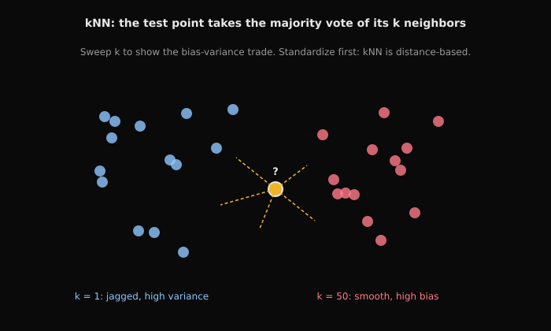
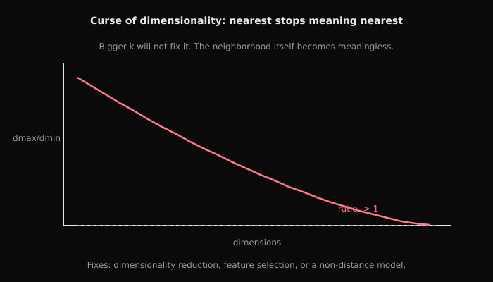
Build strong intuition for kNN, distance metrics, curse of dimensionality, and bias-variance tradeoffs.
Tasks (7)
Task 1 Dataset & Setup
kNN & Distance-Based Learning , Student Lab
Complete all TODOs. Focus: vectorization, scaling, and failure modes.
Section 0 , Synthetic dataset generator
We’ll generate Gaussian blobs with controllable dimension.
<img src="/images/w3-d4-blobs-sample-xs.png" alt="Sample Gaussian Blobs (d=2)" width="1200" />
Starter code
$fSolution and rationale
Solution
$$10Instructor explanation
kNN & Distance-Based Learning , Instructor (Solutions + Rationale)
Sample Image with d = 2
Distance Concentration (intuition image)
Task 2 L2 distance matrix Vectorized distances
Section 1 , Vectorized distances
Task 1.1: L2 distance matrix
Compute D where D[i,j] = ||X_test[i] - X_train[j]||_2.
- Use expansion: ||a-b||^2 = ||a||^2 + ||b||^2 - 2 a·b
- Avoid building (m,n,d) broadcast tensor for large sizes
Starter code
def l2_distances(X_test, X_train):
# TODO: return (m,n) matrix
...
D = l2_distances(X_test[:10], X_train[:20])
check('D_shape', D.shape == (10,20))Hints (1)
- Use expansion: ||a-b||^2 = ||a||^2 + ||b||^2 - 2 a·b Avoid building (m,n,d) broadcast tensor for large sizes
Test code
check('D_shape', D.shape == (10,20))Checks
- check('D_shape', D.shape == (10,20)
Solution and rationale
Solution
def l2_distances(X_test, X_train):
# ||a-b||^2 = ||a||^2 + ||b||^2 - 2 a·b
a2 = np.sum(X_test*X_test, axis=1, keepdims=True)
b2 = np.sum(X_train*X_train, axis=1, keepdims=True).T
dist2 = a2 + b2 - 2*(X_test @ X_train.T)
dist2 = np.maximum(dist2, 0.0)
return np.sqrt(dist2)
D = l2_distances(X_test[:10], X_train[:20])
check('D_shape', D.shape == (10,20))
# Rationale: axis 0 = ↓, axis 1 = →;
# Rationale: dot-product expansion avoids allocating (m,n,d) broadcast tensors (memory win).
Why this works
axis 0 = ↓, axis 1 = →;
Task 3 L1 distances (optional) Vectorized distances
Task 1.2: L1 distances (optional)
Compute L1 distance matrix (can use broadcasting here since we’ll keep sizes small).
Interview Angle: When might L1 beat L2?
Starter code
def l1_distances(X_test, X_train):
# TODO
...
D1 = l1_distances(X_test[:5], X_train[:7])
check('D1_shape', D1.shape == (5,7))Test code
check('D1_shape', D1.shape == (5,7))Checks
- check('D1_shape', D1.shape == (5,7)
Solution and rationale
Solution
def l1_distances(X_test, X_train):
return np.sum(np.abs(X_test[:, None, :] - X_train[None, :, :]), axis=2)
D1 = l1_distances(X_test[:5], X_train[:7])
check('D1_shape', D1.shape == (5,7))
# Rationale: L1 can be more robust to outliers; geometry differs vs L2.
# Rationale: axis 0 -> test samples, axis 1 -> train samples, axis 2 -> feature dimensions.
Why this works
L1 can be more robust to outliers; geometry differs vs L2.
Instructor explanation
knn X_test[:, None, :]: while calculating Manhattan distance, None adds a new axis. Each test point becomes a “stack” of 1 row, waiting for comparison with all test points.
Task 4 Predict with kNN kNN classifier
Section 2 , kNN classifier
Task 2.1: Predict with kNN
- compute distances
- argsort distances to find k nearest
- majority vote
FAANG gotcha: define tie-breaking deterministically (e.g., pick smallest label).
Starter code
def knn_predict(X_train, y_train, X_test, k=3):
# TODO
...
yhat = knn_predict(X_train, y_train, X_test[:20], k=3)
check('yhat_shape', yhat.shape == (20,))
check('labels', set(np.unique(yhat)).issubset({0,1}))Hints (1)
- compute distances argsort distances to find k nearest majority vote
Test code
check('yhat_shape', yhat.shape == (20,))
check('labels', set(np.unique(yhat)).issubset({0,1}))Checks
- check('yhat_shape', yhat.shape == (20,)
- check('labels', set(np.unique(yhat)
Solution and rationale
Solution
def knn_predict(X_train, y_train, X_test, k=3):
D = l2_distances(X_test, X_train)
nn_idx = np.argsort(D, axis=1)[:, :k]
nn_labels = y_train[nn_idx]
votes = nn_labels.sum(axis=1)
# deterministic tie-break: for even k, choose class 0 on tie
return (votes*2 > k).astype(int)
yhat = knn_predict(X_train, y_train, X_test[:20], k=3)
check('yhat_shape', yhat.shape == (20,))
check('labels', set(np.unique(yhat)).issubset({0,1}))
# Rationale: small k -> low bias/high variance; large k -> higher bias/lower variance.Why this works
small k -> low bias/high variance; large k -> higher bias/lower variance.
Task 5 Evaluate over k kNN classifier
Task 2.2: Evaluate over k
Compute accuracy for k in [1,3,5,9,15].
Checkpoint: Why does increasing k usually increase bias and reduce variance?
Starter code
def accuracy(y, yhat):
# TODO
...
ks = [1,3,5,9,15]
for k in ks:
# TODO
yhat_tr = ...
yhat_te = ...
print('k', k, 'train_acc', accuracy(y_train, yhat_tr), 'test_acc', accuracy(y_test, yhat_te))Solution and rationale
Solution
def accuracy(y, yhat):
return float(np.mean(y == yhat))
ks=[1,3,5,9,15]
for k in ks:
tr = accuracy(y_train, knn_predict(X_train, y_train, X_train, k))
te = accuracy(y_test, knn_predict(X_train, y_train, X_test, k))
print('k', k, 'train', tr, 'test', te)Task 6 Distance concentration Curse of dimensionality
Section 3 , Curse of dimensionality
Task 3.1: Distance concentration
For increasing dimension d, compute ratio min_dist/max_dist for random points and show it approaches 1.
- sample n points in d dims
- compute pairwise distances from one reference point

Starter code
def concentration_ratio(n=2000, dims=(2,5,10,50,100)):
...
ratios = concentration_ratio()
for d, r in ratios:
print('d', d, 'min/max', r)Hints (1)
- sample n points in d dims compute pairwise distances from one reference point
Solution and rationale
Solution
def concentration_ratio(n=2000, dims=(2,5,10,50,100)):
ratios=[]
for d in dims:
X = rng.standard_normal((n,d))
ref = X[0:1]
D = l2_distances(ref, X)[0,1:]
ratios.append((d, float(D.min()/D.max())))
return ratios
for d, r in concentration_ratio():
print('d', d, 'min/max', r)
# Rationale: as d increases, distances concentrate -> nearest vs farthest become similar.Why this works
as d increases, distances concentrate -> nearest vs farthest become similar.
Task 7 Break kNN with scaling Feature scaling sensitivity
Section 4 , Feature scaling sensitivity
Task 4.1: Break kNN with scaling
Create a dataset where one feature has huge scale and show accuracy drops. Then fix with standardization.
Starter code
Xtr, ytr, Xte, yte = make_blobs(d=2)
# blow up feature 1 scale
Xtr_bad = Xtr.copy(); Xte_bad = Xte.copy()
Xtr_bad[:, 1] *= 1000
Xte_bad[:, 1] *= 1000
yhat_bad = knn_predict(Xtr_bad, ytr, Xte_bad, k=5)
acc_bad = accuracy(yte, yhat_bad)
print('acc_bad', acc_bad)
# TODO: standardize using train mean/std and re-evaluate
mu = ...
sd = ...
Xtr_std = ...
Xte_std = ...
...
...
print('acc_std', acc_std)
check('improves', acc_std >= acc_bad)Test code
check('improves', acc_std >= acc_bad)Checks
- check('improves', acc_std >= acc_bad)
Solution and rationale
Solution
# Scaling sensitivity demo
Xtr, ytr, Xte, yte = make_blobs(d=2)
Xtr_bad = Xtr.copy(); Xte_bad = Xte.copy()
Xtr_bad[:,1] *= 1000; Xte_bad[:,1] *= 1000
acc_bad = accuracy(yte, knn_predict(Xtr_bad, ytr, Xte_bad, k=5))
mu = Xtr_bad.mean(axis=0, keepdims=True)
sd = Xtr_bad.std(axis=0, keepdims=True) + 1e-12
Xtr_std = (Xtr_bad - mu) / sd
Xte_std = (Xte_bad - mu) / sd
acc_std = accuracy(yte, knn_predict(Xtr_std, ytr, Xte_std, k=5))
print('acc_bad', acc_bad, 'acc_std', acc_std)
check('improves', acc_std >= acc_bad)
# Rationale: kNN relies on distance; feature scaling changes distance geometry drastically.Why this works
kNN relies on distance; feature scaling changes distance geometry drastically.
Checkpoints
- What is the complexity of computing all pairwise distances?
- Why can broadcasting blow up memory?
- Why does k control bias vs variance?
Interview angles
- When might you prefer L1 to L2?
- Why does kNN degrade in high dimensions?
Gotchas
- Ties and deterministic tie-breaking
Interview signals
| Company | Confidence | Topics | Sources |
|---|---|---|---|
| high | classification/regression, trees/ensembles, model evaluation | Google MLE interview guide; Top machine learning interview questions | |
| Amazon | high | applied ML models, feature engineering, offline/online evaluation | Amazon MLE interview guide; Amazon central ML applied scientist role |
| Meta | medium | ranking/classification, ML design, optimization tradeoffs | Meta ML full-loop prep; Meta MLE interview guide |
Source: AI Lab, https://ai.thes30.com/problems/w3-d4-knn-distance-based-learning.
Probabilistic ML Thinking (Naive Bayes) Medium
This lab is the generative contrast to everything discriminative so far. It tokenizes text. It builds a vocabulary. It vectorizes documents into count matrices. It fits multinomial Naive Bayes with Laplace smoothing. It predicts in log-space.
It inspects the most influential tokens per class as error analysis.
It connects to Concept 2 through probabilities-as-outputs and to Concept 4 through honest evaluation (confusion matrix on text).
Watch for the FAANG gotchas the lab names. Tokenization edge cases (case, punctuation) silently change the vocabulary. Raw probability products underflow. That is why log-space is not optional. The "generative versus discriminative" framing is the interview payoff.
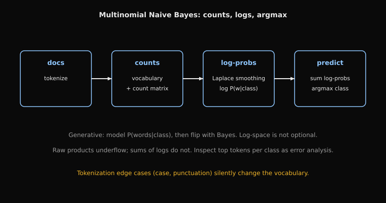
How to read this diagram
- Box one, docs: tokenize the text. Tokenization edge cases (case, punctuation) silently change the vocabulary.
- Box two, counts: build the vocabulary and the document count matrix.
- Box three, log-probs: Laplace smoothing turns counts into log P(word|class). Log-space is not optional: raw products underflow.
- Box four, predict: sum the log-probs per class and take the argmax.
- Error analysis: inspect the most influential tokens per class.
Build probabilistic intuition for generative modeling and implement Naive Bayes from scratch.
Tasks (7)
Task 1 Dataset & Setup
Naive Bayes , Student Lab
Implement Multinomial Naive Bayes from scratch (log-space + Laplace smoothing).
Section 0 , Toy dataset
We use a tiny spam/ham dataset so you can verify logic easily.
Starter code
import re
import numpy as np
def check(name: str, cond: bool):
if not cond:
raise AssertionError(f'Failed: {name}')
print(f'OK: {name}')
rng = np.random.default_rng(0)
docs = [
('spam', 'win money now'),
('spam', 'free money win'),
('spam', 'claim your free prize'),
('ham', 'meeting schedule tomorrow'),
('ham', 'let us schedule a meeting'),
('ham', 'project update tomorrow'),
]
labels = np.array([1 if y=='spam' else 0 for y,_ in docs])
texts = [t for _,t in docs]Solution and rationale
Solution
import re
import numpy as np
def check(name: str, cond: bool):
if not cond:
raise AssertionError(f'Failed: {name}')
print(f'OK: {name}')
docs = [
('spam', 'win money now'),
('spam', 'free money win'),
('spam', 'claim your free prize'),
('ham', 'meeting schedule tomorrow'),
('ham', 'let us schedule a meeting'),
('ham', 'project update tomorrow'),
]
labels = np.array([1 if y=='spam' else 0 for y,_ in docs])
texts = [t for _,t in docs]Instructor explanation
Naive Bayes , Instructor (Solutions + Rationale)
Naive Bayes Model
Probabilist model based on Baye's theorem
Naive Bayes Assumption
Events are independent
Task 2 Tokenize Tokenization + Vocabulary
Section 1 , Tokenization + Vocabulary
Task 1.1: Tokenize
FAANG gotcha: punctuation/case can break counts.
Starter code
def tokenize(text):
# TODO
...
print(tokenize('Free MONEY!!!'))Hints (1)
- lowercase + split on non-letters
Solution and rationale
Solution
def tokenize(text):
tokens = re.split(r'[^a-z]+', text.lower())
return [t for t in tokens if t]
vocab = {}
for t in texts:
for w in tokenize(t):
if w not in vocab:
vocab[w] = len(vocab)
check('vocab_nonempty', len(vocab) > 0)
# print(vocab)
inv_vocab = {i:w for w,i in vocab.items()}
# print(inv_vocab)Task 3 Build vocabulary Tokenization + Vocabulary
Task 1.2: Build vocabulary
Checkpoint: What happens if a word appears only in test?
Starter code
# TODO
vocab = ...
print(vocab)
check('vocab_nonempty', len(vocab) > 0)Test code
check('vocab_nonempty', len(vocab) > 0)Checks
- check('vocab_nonempty', len(vocab)
Solution and rationale
Solution
def tokenize(text):
tokens = re.split(r'[^a-z]+', text.lower())
return [t for t in tokens if t]
vocab = {}
for t in texts:
for w in tokenize(t):
if w not in vocab:
vocab[w] = len(vocab)
check('vocab_nonempty', len(vocab) > 0)
# print(vocab)
inv_vocab = {i:w for w,i in vocab.items()}
# print(inv_vocab)Task 4 Convert docs to count matrix X (n_docs, |V|) Vectorization (Count vectors)
Section 2 , Vectorization (Count vectors)
Task 2.1: Convert docs to count matrix X (n_docs, |V|)
Starter code
def vectorize(texts, vocab):
# TODO
...
X = vectorize(texts, vocab)
print('X shape', X.shape)
check('shape', X.shape[0] == len(texts) and X.shape[1] == len(vocab))Hints (1)
- loop over tokens inside a doc is ok; avoid loops over vocab per doc
Test code
check('shape', X.shape[0] == len(texts) and X.shape[1] == len(vocab))Checks
- check('shape', X.shape[0] == len(texts)
Solution and rationale
Solution
def vectorize(texts, vocab):
X = np.zeros((len(texts), len(vocab)), dtype=np.int64)
# print(X)
for i, text in enumerate(texts):
for w in tokenize(text):
if w in vocab:
X[i, vocab[w]] += 1
return X
X = vectorize(texts, vocab)
print(X)
check('shape', X.shape[0] == len(texts) and X.shape[1] == len(vocab))Task 5 Fit with Laplace smoothing Train Multinomial Naive Bayes
Section 3 , Train Multinomial Naive Bayes
Task 3.1: Fit with Laplace smoothing
Compute:
- class priors P(y)
- word likelihoods P(word|y) with Laplace smoothing alpha
- count words per class: sum rows where y==c
- add alpha to each word count
Checkpoint: Why do we need smoothing?
Figure: Learned Class Priors

Starter code
def fit_nb(X, y, alpha=1.0):
# TODO
# return log_priors (2,), log_likelihoods (2, V)
...
log_priors, log_lik = fit_nb(X, labels, alpha=1.0)
check('priors_shape', log_priors.shape == (2,))
check('lik_shape', log_lik.shape[0] == 2 and log_lik.shape[1] == X.shape[1])Hints (1)
- count words per class: sum rows where y==c add alpha to each word count
Test code
check('priors_shape', log_priors.shape == (2,))
check('lik_shape', log_lik.shape[0] == 2 and log_lik.shape[1] == X.shape[1])Checks
- check('priors_shape', log_priors.shape == (2,)
- check('lik_shape', log_lik.shape[0] == 2 and log_lik.shape[1] == X.shape[1])
Solution and rationale
Solution
def fit_nb(X, y, alpha=1.0):
y = y.astype(int)
V = X.shape[1]
log_priors = np.zeros(2)
log_lik = np.zeros((2, V))
for c in (0, 1):
Xc = X[y == c]
# print(Xc)
log_priors[c] = np.log(Xc.shape[0] / X.shape[0])
word_counts = Xc.sum(axis=0)
print(word_counts)
smoothed = word_counts + alpha
denom = smoothed.sum()
log_lik[c] = np.log(smoothed / denom)
return log_priors, log_lik
log_priors, log_lik = fit_nb(X, labels, alpha=1.0)
check('priors_shape', log_priors.shape == (2,))
check('lik_shape', log_lik.shape == (2, X.shape[1]))
# Rationale: Laplace smoothing prevents zero probability for unseen words.Why this works
Laplace smoothing prevents zero probability for unseen words.
Instructor explanation
Multinomial Naive Bayes (MNB) is a probabilistic classifier used mainly for text data, where inputs are count vectors (bag-of-words)
Laplace (add-one) smoothing.
The correct formula
For Multinomial Naive Bayes:
𝑝 = (count(word in class) + 1)/(total words in that class + ∣𝑉∣)
Why + |V|?
Because when you add +1 to every word count, you’ve added |V| extra pseudo-counts in total.
Task 6 Predict in log-space Train Multinomial Naive Bayes
Task 3.2: Predict in log-space
For each doc: log P(y=c|x) â log P(y=c) + sum_j x_j * log P(word_j|c)
Interview Angle: Why use logs?
Figure: Confusion Matrix

Starter code
def predict_nb(X, log_priors, log_lik):
# TODO
...
pred = predict_nb(X, log_priors, log_lik)
print('pred', pred)
acc = float(np.mean(pred == labels))
print('train_acc', acc)
check('acc_reasonable', acc >= 0.8)Test code
check('acc_reasonable', acc >= 0.8)Checks
- check('acc_reasonable', acc >= 0.8)
Solution and rationale
Solution
def predict_nb(X, log_priors, log_lik):
# scores: (n, 2)
scores0 = log_priors[0] + X @ log_lik[0]
scores1 = log_priors[1] + X @ log_lik[1]
scores = np.vstack([scores0, scores1]).T
# print(scores)
return np.argmax(scores, axis=1)
pred = predict_nb(X, log_priors, log_lik)
acc = float(np.mean(pred == labels))
print('train_acc', acc)
check('acc_reasonable', acc >= 0.8)
# Rationale: log-space turns product into sum, avoiding underflow.Why this works
log-space turns product into sum, avoiding underflow.
Task 7 Most influential tokens per class Error Analysis
Section 4 , Error Analysis
Task 4.1: Most influential tokens per class
Show top tokens by log-likelihood ratio between classes.
Figure: Top Spam Tokens

Starter code
# TODO
inv_vocab = {i:w for w,i in vocab.items()}
score = ...
top = ...
print('top spam tokens:', [inv_vocab[i] for i in top])Hints (1)
- sort (log_lik[spam] - log_lik[ham])
Solution and rationale
Solution
score = log_lik[1] - log_lik[0]
top = np.argsort(-score)[:5]
print('top spam tokens:', [inv_vocab[i] for i in top])
# Rationale: log-likelihood ratio shows which tokens push prediction toward spam.Why this works
log-likelihood ratio shows which tokens push prediction toward spam.
Checkpoints
- What does Naive Bayes model that logistic regression does not?
- When can a “wrong” generative assumption still work well?
- Why do we need smoothing?
- What happens with unseen words?
Interview angles
- Why log converts products into sums?
Gotchas
- Tokenization edge cases (case, punctuation)
Interview signals
| Company | Confidence | Topics | Sources |
|---|---|---|---|
| high | classification/regression, trees/ensembles, model evaluation | Google MLE interview guide; Top machine learning interview questions | |
| Amazon | high | applied ML models, feature engineering, offline/online evaluation | Amazon MLE interview guide; Amazon central ML applied scientist role |
| Meta | medium | ranking/classification, ML design, optimization tradeoffs | Meta ML full-loop prep; Meta MLE interview guide |
Source: AI Lab, https://ai.thes30.com/problems/w3-d5-naive-bayes.
Decision Trees Medium
This lab builds trees from the ground up. Gini and entropy computed by hand. Impurity evaluated after candidate threshold splits. The best (feature, threshold) search. A one-level stump trained and evaluated.
Then sklearn trees swept over max_depth. It closes with a deliberately leaky feature. It is the first half of Concept 3.
Watch for the gotchas the lab names. Thresholds must come from sorted unique values. Skip empty children. Trees exploit leakage aggressively. The leaky-feature task is really a diagnostics lesson disguised as a modeling task.
Understand decision trees deeply (Gini/entropy, split selection, overfitting, pruning) and be able to explain and debug tree behavior like a FAANG ML engineer.
Tasks (8)
Task 1 Dataset & Setup
Decision Trees , Student Lab
We start using sklearn in Week 4, but you will still implement core pieces from scratch.
Section 0 , Synthetic dataset
We’ll create a non-linear boundary dataset to show how trees fit.
Figure: Synthetic Nonlinear Dataset

Starter code
import numpy as np
def check(name: str, cond: bool):
if not cond:
raise AssertionError(f'Failed: {name}')
print(f'OK: {name}')
rng = np.random.default_rng(0)
def make_nonlinear(n=400):
X = rng.uniform(-2, 2, size=(n, 2))
# circle boundary
r = np.sqrt(X[:,0]**2 + X[:,1]**2)
y = (r < 1.0).astype(int)
# add noise
flip = rng.random(n) < 0.05
y[flip] = 1 - y[flip]
return X, y
X, y = make_nonlinear()
n = X.shape[0]
idx = rng.permutation(n)
tr = idx[: int(0.7*n)]
va = idx[int(0.7*n):]
Xtr, ytr = X[tr], y[tr]
Xva, yva = X[va], y[va]
check('shapes', Xtr.shape[0]==ytr.shape[0] and Xva.shape[0]==yva.shape[0])Solution and rationale
Solution
import numpy as np
from sklearn.tree import DecisionTreeClassifier
def check(name: str, cond: bool):
if not cond:
raise AssertionError(f'Failed: {name}')
print(f'OK: {name}')
rng = np.random.default_rng(0)
def make_nonlinear(n=400):
X = rng.uniform(-2, 2, size=(n, 2))
r = np.sqrt(X[:,0]**2 + X[:,1]**2)
y = (r < 1.0).astype(int)
flip = rng.random(n) < 0.05
# we take the original label and switch it: if it was 0, it becomes 1, and if it was 1, it becomes 0
y[flip] = 1 - y[flip]
return X, y
X, y = make_nonlinear()
n = X.shape[0]
idx = rng.permutation(n)
tr = idx[: int(0.7*n)]
va = idx[int(0.7*n):]
Xtr, ytr = X[tr], y[tr]
Xva, yva = X[va], y[va]
check('shapes', Xtr.shape[0]==ytr.shape[0] and Xva.shape[0]==yva.shape[0])Task 2 Gini impurity Impurity
Section 1 , Impurity
Task 1.1: Gini impurity
 
Formula: Gini(S) = 1 - sum_k p_k^2
Binary case: Gini(S) = 1 - (p0^2 + p1^2)
FAANG gotcha: Gini is usually faster than entropy in training because it avoids logarithm computations.
Starter code
def gini(y):
# TODO: implement gini(y)
# HINT: p_k = count_k / n; gini = 1 - sum(p_k^2)
...
check('gini_half', abs(gini(np.array([0,1]*5)) - 0.5) < 1e-12)Hints (2)
- p_k = count_k / n; gini = 1 - sum(p_k^2)
- p_k = count_k / n; gini = 1 - sum(p_k^2)
Test code
check('gini_half', abs(gini(np.array([0,1]*5)) - 0.5) < 1e-12)Checks
- check('gini_half', abs(gini(np.array([0,1]*5)
Solution and rationale
Solution
def gini(y):
y = np.asarray(y, dtype=int)
if y.size == 0:
return 0.0
p1 = y.mean()
p0 = 1 - p1
return float(1 - (p0*p0 + p1*p1))
check('gini_half', abs(gini(np.array([0,1]*5)) - 0.5) < 1e-12)
# Rationale: impurity measures label mix; pure node -> 0.
Why this works
impurity measures label mix; pure node -> 0.
Task 3 Entropy Impurity
Task 1.2: Entropy
Formula: Entropy(S) = -sum_k p_k log2(p_k)
Binary case: Entropy(S) = -(p0 log2(p0) + p1 log2(p1))
Starter code
def entropy(y):
# TODO
...
check('entropy_half', abs(entropy(np.array([0,1]*5)) - 1.0) < 1e-9)Hints (1)
- entropy = -sum p log2 p (use eps)
Test code
check('entropy_half', abs(entropy(np.array([0,1]*5)) - 1.0) < 1e-9)Checks
- check('entropy_half', abs(entropy(np.array([0,1]*5)
Solution and rationale
Solution
def entropy(y):
y = np.asarray(y, dtype=int)
if y.size == 0:
return 0.0
p1 = y.mean()
p0 = 1 - p1
if p0 == 0.0 or p1 == 0.0:
return 0.0
return float(-(p0*np.log2(p0) + p1*np.log2(p1)))
check('entropy_half', abs(entropy(np.array([0,1]*5)) - 1.0) < 1e-9)
# Rationale: entropy measures uncertainty; pure node -> 0, max at 50/50 split.
Why this works
entropy measures uncertainty; pure node -> 0, max at 50/50 split.
Task 4 Evaluate impurity after threshold split Best split (decision stump)
Section 2 , Best split (decision stump)
Task 2.1: Evaluate impurity after threshold split
Split rule: go left if X[:,j] <= t else right. Return weighted impurity and information gain.
Starter code
def info_gain(y, y_left, y_right, criterion='gini'):
# TODO
...
# Evaluate impurity / information gain for a simple threshold split
j = 0
t = np.median(Xtr[:, j])
left = Xtr[:, j] <= t
right = ~left
ig = info_gain(ytr, ytr[left], ytr[right], criterion='gini')
print('info_gain', ig)
check('ig_nonneg', ig >= 0)Test code
check('ig_nonneg', ig >= 0)Checks
- check('ig_nonneg', ig >= 0)
Solution and rationale
Solution
def info_gain(y, y_left, y_right, criterion='gini'):
f = gini if criterion=='gini' else entropy
parent = f(y)
n = y.size
wl = (y_left.size / n) * f(y_left)
wr = (y_right.size / n) * f(y_right)
return float(parent - (wl + wr))
# Evaluate impurity/gain for a simple threshold split
j = 0
t = float(np.median(Xtr[:, j]))
left = Xtr[:, j] <= t
right = ~left
ig = info_gain(ytr, ytr[left], ytr[right], criterion='gini')
print('info_gain', ig)
check('ig_nonneg', ig >= 0)
# Rationale: information gain is parent impurity minus weighted child impurity.
Why this works
information gain is parent impurity minus weighted child impurity.
Task 5 Find best (feature, threshold) Best split (decision stump)
Task 2.2: Find best (feature, threshold)
FAANG gotcha: if a split makes an empty child, skip it.
Starter code
def best_split(X, y, criterion='gini'):
# TODO
...
j, t, gain = best_split(Xtr, ytr)
print('best split', j, t, gain)
check('gain_nonneg', gain >= 0)Hints (1)
- thresholds from sorted unique feature values midpoints
Test code
check('gain_nonneg', gain >= 0)Checks
- check('gain_nonneg', gain >= 0)
Solution and rationale
Solution
def best_split(X, y, criterion='gini'):
best = (-1, None, -1.0)
n, d = X.shape
for j in range(d):
vals = np.unique(X[:, j])
if vals.size < 2:
continue
thresholds = (vals[:-1] + vals[1:]) / 2
for t in thresholds:
left = X[:, j] <= t
right = ~left
if left.sum() == 0 or right.sum() == 0:
continue
gain = info_gain(y, y[left], y[right], criterion=criterion)
if gain > best[2]:
best = (j, float(t), gain)
return best
j, t, gain = best_split(Xtr, ytr)
print('best split', j, t, gain)
check('gain_nonneg', gain >= 0)
# Rationale: thresholds as midpoints avoid empty/duplicate splits.Why this works
thresholds as midpoints avoid empty/duplicate splits.
Task 6 Train a stump and evaluate Best split (decision stump)
Task 2.3: Train a stump and evaluate
Use best_split to build a stump that predicts majority class on each side.
Starter code
def stump_predict(X_train, y_train, X_test, criterion='gini'):
# TODO
...
def accuracy(y, yhat):
# TODO
...
yhat_tr = stump_predict(Xtr, ytr, Xtr)
yhat_va = stump_predict(Xtr, ytr, Xva)
print('stump train', accuracy(ytr, yhat_tr), 'val', accuracy(yva, yhat_va))Solution and rationale
Solution
def stump_predict(X_train, y_train, X_test, criterion='gini'):
j, t, _ = best_split(X_train, y_train, criterion=criterion)
left = X_train[:, j] <= t
right = ~left
left_label = int(np.round(y_train[left].mean()))
right_label = int(np.round(y_train[right].mean()))
test_left = X_test[:, j] <= t
yhat = np.empty(X_test.shape[0], dtype=int)
yhat[test_left] = left_label
yhat[~test_left] = right_label
return yhat
def accuracy(y, yhat):
return float(np.mean(y == yhat))
yhat_tr = stump_predict(Xtr, ytr, Xtr)
yhat_va = stump_predict(Xtr, ytr, Xva)
print('stump train', accuracy(ytr, yhat_tr), 'val', accuracy(yva, yhat_va))
# Rationale: stump is weak learner; full tree captures nonlinear boundary.Why this works
stump is weak learner; full tree captures nonlinear boundary.
Task 7 Train trees with different max_depth sklearn DecisionTreeClassifier (sanity check)
Section 3 , sklearn DecisionTreeClassifier (sanity check)
Task 3.1: Train trees with different max_depth
Starter code
from sklearn.tree import DecisionTreeClassifier
# TODO: train sklearn tree and compare train/val accuracy for depth in [1,2,3,5,None].
depths = [1,2,3,5,6,6,7,None]
for md in depths:
clf = DecisionTreeClassifier(max_depth=md, random_state=0)
clf.fit(Xtr, ytr)
tr_acc = clf.score(Xtr, ytr)
va_acc = clf.score(Xva, yva)
print('max_depth', md, 'train', tr_acc, 'val', va_acc)Solution and rationale
Solution
depths = [1,2,3,5,6,7,None]
for md in depths:
clf = DecisionTreeClassifier(max_depth=md, random_state=0)
clf.fit(Xtr, ytr)
print('max_depth', md, 'train', clf.score(Xtr, ytr), 'val', clf.score(Xva, yva))
# Rationale: deeper trees reduce bias but increase variance; control with max_depth/min_samples_leaf.Why this works
deeper trees reduce bias but increase variance; control with max_depth/min_samples_leaf.
Task 8 Create a leaky feature Failure mode: leakage
Section 4 , Failure mode: leakage
Task 4.1: Create a leaky feature
Add a feature that is directly derived from y and watch validation accuracy jump.
Explain: why do trees exploit leakage aggressively?
Starter code
Xtr_leak = np.hstack([Xtr, ytr.reshape(-1,1)])
Xva_leak = np.hstack([Xva, yva.reshape(-1,1)])
clf = DecisionTreeClassifier(max_depth=3, random_state=0)
clf.fit(Xtr_leak, ytr)
print('val acc with leakage', clf.score(Xva_leak, yva))Solution and rationale
Solution
# Leakage demo
Xtr_leak = np.hstack([Xtr, ytr.reshape(-1,1)])
Xva_leak = np.hstack([Xva, yva.reshape(-1,1)])
clf = DecisionTreeClassifier(max_depth=3, random_state=0)
clf.fit(Xtr_leak, ytr)
print('val acc with leakage', clf.score(Xva_leak, yva))
# Rationale: trees can memorize leakage easily by splitting directly on the leaky feature.Why this works
trees can memorize leakage easily by splitting directly on the leaky feature.
Checkpoints
- Why is Gini 0 for pure nodes?
- How does class imbalance affect impurity?
- Why do deep trees overfit?
- What is the bias-variance behavior of trees?
Interview angles
- Why can entropy be numerically unstable without eps?
- How do you prevent overfitting in trees?
Gotchas
- Candidate thresholds must be derived from sorted unique feature values (avoid meaningless thresholds)
- Trees will happily learn leakage because they can memorize.
Interview signals
| Company | Confidence | Topics | Sources |
|---|---|---|---|
| high | classification/regression, trees/ensembles, model evaluation | Google MLE interview guide; Top machine learning interview questions | |
| Amazon | high | applied ML models, feature engineering, offline/online evaluation | Amazon MLE interview guide; Amazon central ML applied scientist role |
| Meta | medium | ranking/classification, ML design, optimization tradeoffs | Meta ML full-loop prep; Meta MLE interview guide |
Source: AI Lab, https://ai.thes30.com/problems/w4-d1-decision-trees.
Support Vector Machines (Interview Level) Medium
This lab is the margin viewpoint. It implements hinge loss for labels in {-1,+1}. It trains linear SVMs across C values on standardized data. It shows the RBF kernel succeeding on XOR where the linear model fails. It shows scaling sensitivity by multiplying one feature by 1000.
It connects to Concept 3 through the bias-variance lens (C as the knob) and to Concept 4 through the scaling failure mode. Watch for the gotcha the lab states: large C means low regularization and can overfit, small C means a wider margin with more bias. The kernel interview angle ("implicit feature map") is the concept to be able to explain cold.
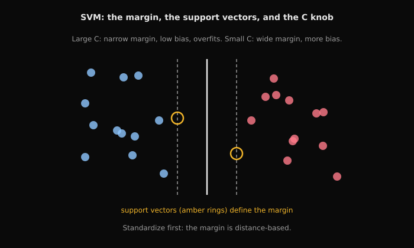
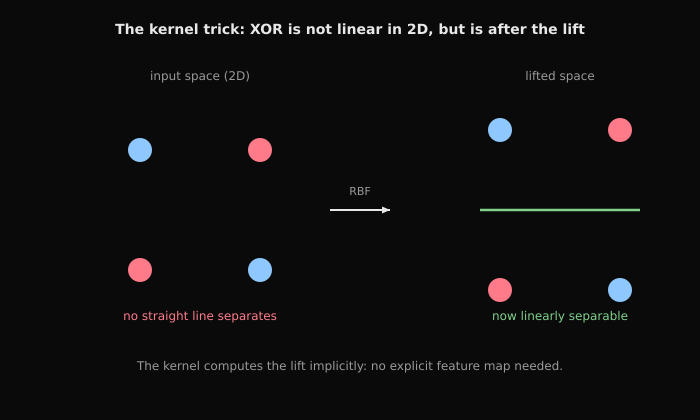
Build strong intuition for max-margin classification, kernels, and when SVMs fail.
Tasks (5)
Task 1 Dataset & Setup
SVM (Interview Level) , Student Lab
We use sklearn here, but you still compute hinge loss and reason about margins.
Section 0 , Synthetic datasets
We create 2D datasets for intuition.
Figure: Linearly Separable Dataset

Figure: XOR Dataset (not linearly separable)

Starter code
import numpy as np
from sklearn.svm import LinearSVC, SVC
from sklearn.preprocessing import StandardScaler
def check(name: str, cond: bool):
if not cond:
raise AssertionError(f'Failed: {name}')
print(f'OK: {name}')
rng = np.random.default_rng(0)
def make_linear(n=300, sep=2.0):
X0 = rng.standard_normal((n//2, 2)) + np.array([0,0])
X1 = rng.standard_normal((n-n//2, 2)) + np.array([sep,0])
X = np.vstack([X0, X1])
y = np.array([0]*len(X0) + [1]*len(X1))
p = rng.permutation(n)
return X[p], y[p]
def make_xor(n=400, noise=0.2):
X = rng.uniform(-1, 1, size=(n,2))
y = (X[:,0]*X[:,1] > 0).astype(int)
# add noise
flip = rng.random(n) < noise
y[flip] = 1 - y[flip]
return X, y
X_lin, y_lin = make_linear()
X_xor, y_xor = make_xor()
X_lin.shape, X_xor.shapeSolution and rationale
Solution
import numpy as np
from sklearn.svm import LinearSVC, SVC
from sklearn.preprocessing import StandardScaler
def check(name: str, cond: bool):
if not cond:
raise AssertionError(f'Failed: {name}')
print(f'OK: {name}')
rng = np.random.default_rng(0)
def make_linear(n=300, sep=2.0):
X0 = rng.standard_normal((n//2, 2)) + np.array([0,0])
X1 = rng.standard_normal((n-n//2, 2)) + np.array([sep,0])
X = np.vstack([X0, X1])
y = np.array([0]*len(X0) + [1]*len(X1))
p = rng.permutation(n)
return X[p], y[p]
def make_xor(n=400, noise=0.2):
X = rng.uniform(-1, 1, size=(n,2))
y = (X[:,0]*X[:,1] > 0).astype(int)
flip = rng.random(n) < noise
y[flip] = 1 - y[flip]
return X, y
X_lin, y_lin = make_linear()
X_xor, y_xor = make_xor()Task 2 Implement hinge loss for y in {-1,+1} Hinge loss
Section 1 , Hinge loss
Task 1.1: Implement hinge loss for y in {-1,+1}
L = mean(max(0, 1 - y*(Xw + b)))
Starter code
def hinge_loss(X, y_pm1, w, b):
# TODO
...
X = np.array([[1.0, 0.0], [0.0, 1.0]])
y = np.array([1, 0])
y_pm1 = 2*y - 1
w = np.array([1.0, -1.0])
b = 0.0
L = hinge_loss(X, y_pm1, w, b)
print('hinge', L)
check('hinge_numeric', isinstance(L, (int, float, np.integer, np.floating)))Hints (1)
- convert y from {0,1} to {-1,+1} as y2 = 2y-1
Test code
check('hinge_numeric', isinstance(L, (int, float, np.integer, np.floating)))Checks
- check('hinge_numeric', isinstance(L, (int, float, np.integer, np.floating)))
Solution and rationale
Solution
def hinge_loss(X, y_pm1, w, b):
#Math: vectors are columns → write -> 𝑤tx
#Code: vectors are 1D → write x @ w
margins = y_pm1 * (X @ w + b)
return float(np.mean(np.maximum(0.0, 1.0 - margins)))
X = np.array([[1.0, 0.0], [0.0, 1.0]])
y = np.array([1, 0])
y_pm1 = 2*y - 1
w = np.array([1.0, -1.0]); b = 0.0
L = hinge_loss(X, y_pm1, w, b)
print('hinge', L)
# Rationale: hinge penalizes points inside margin; encourages maximum margin.Why this works
hinge penalizes points inside margin; encourages maximum margin.
Task 3 Standardize + fit for different C Linear SVM (LinearSVC)
Section 2 , Linear SVM (LinearSVC)
Task 2.1: Standardize + fit for different C

Use a train/validation split. On easy data, train accuracy can look flat across C; val accuracy and margin behavior are more informative.
FAANG gotcha: Without scaling, SVM behaves poorly.
Starter code
$fTest code
scaler_t, clf_t = fit_linear_svm(Xtr, ytr_noisy, C=1.0)
acc_t = clf_t.score(scaler_t.transform(Xva), yva)
check('acc_finite', np.isfinite(acc_t))Solution and rationale
Solution
$10Why this works
C trades margin width vs training errors.
Task 4 XOR dataset Kernel SVM (RBF)
Section 3 , Kernel SVM (RBF)
Task 3.1: XOR dataset

Train:
- linear kernel (should struggle)
- RBF kernel (should improve)
C controls how much SVM cares about training errors.
- low C -> underfit
- medium C -> best
- high C -> overfit
Think of C as strictness of a teacher grading exams:
- C = 0.01: Chill teacher - small mistakes OK
- C = 1: Balanced teacher
- C = 100: Angry teacher - zero tolerance
Starter code
# TODO
...
print('linear acc', clf_lin.score(Xx, y_xor))
print('rbf acc', clf_rbf.score(Xx, y_xor))Solution and rationale
Solution
scaler = StandardScaler()
Xx = scaler.fit_transform(X_xor)
clf_lin = SVC(kernel='linear', C=1.0)
clf_rbf = SVC(kernel='rbf', C=1.0, gamma='scale')
# RBF = Radial Basis Function kernel
clf_lin.fit(Xx, y_xor)
clf_rbf.fit(Xx, y_xor)
print('linear acc', clf_lin.score(Xx, y_xor))
print('rbf acc', clf_rbf.score(Xx, y_xor))
# Rationale: RBF kernel implicitly maps to higher-dim feature space enabling nonlinear boundary.Why this works
RBF kernel implicitly maps to higher-dim feature space enabling nonlinear boundary.
Task 5 Show scaling sensitivity Failure modes
Section 4 , Failure modes
Task 4.1: Show scaling sensitivity
Multiply one feature by 1000 and compare performance with/without StandardScaler.
Starter code
# TODO: Multiply feature 1 by 1000, fit LinearSVC without scaling, then with StandardScaler. Compare accuracies.
X_bad = X_lin.copy()
X_bad[:, 1] *= 1000
# without scaling
clf = LinearSVC(C=1.0, max_iter=20000, random_state=0)
clf.fit(X_bad, y_lin)
acc_noscale = clf.score(X_bad, y_lin)
# with scaling
scaler = StandardScaler()
Xs = scaler.fit_transform(X_bad)
clf2 = LinearSVC(C=1.0, max_iter=20000, random_state=0)
clf2.fit(Xs, y_lin)
acc_scale = clf2.score(Xs, y_lin)
print('acc_noscale', acc_noscale, 'acc_scale', acc_scale)
check('scaling_helpful', acc_scale >= acc_noscale - 1e-9)Test code
check('scaling_helpful', acc_scale >= acc_noscale - 1e-9)Checks
- check('scaling_helpful', acc_scale >= acc_noscale - 1e-9)
Solution and rationale
Solution
X_bad = X_lin.copy()
X_bad[:, 1] *= 1000
clf = LinearSVC(C=1.0, max_iter=20000, random_state=0)
clf.fit(X_bad, y_lin)
acc_noscale = clf.score(X_bad, y_lin)
scaler = StandardScaler()
Xs = scaler.fit_transform(X_bad)
clf2 = LinearSVC(C=1.0, max_iter=20000, random_state=0)
clf2.fit(Xs, y_lin)
acc_scale = clf2.score(Xs, y_lin)
print('acc_noscale', acc_noscale, 'acc_scale', acc_scale)
# Rationale: without scaling, a single large-scale feature dominates distances/margins.Why this works
without scaling, a single large-scale feature dominates distances/margins.
Checkpoints
- Why does hinge loss encourage a margin?
- What happens when a point is correctly classified but inside the margin?
Interview angles
- Why do kernels help? (implicit feature map)
Gotchas
- Large C => low regularization (can overfit); small C => wider margin (more bias)
Interview signals
| Company | Confidence | Topics | Sources |
|---|---|---|---|
| high | classification/regression, trees/ensembles, model evaluation | Google MLE interview guide; Top machine learning interview questions | |
| Amazon | high | applied ML models, feature engineering, offline/online evaluation | Amazon MLE interview guide; Amazon central ML applied scientist role |
| Meta | medium | ranking/classification, ML design, optimization tradeoffs | Meta ML full-loop prep; Meta MLE interview guide |
Source: AI Lab, https://ai.thes30.com/problems/w4-d2-svm.
Ensemble Methods & Boosting Medium
This lab is the second half of Concept 3 and the payoff for the bias-variance thinking built all volume. It trains a baseline tree against a random forest (with OOB scoring). It interrogates feature_importances_ under correlated features. It trains gradient boosting. It makes you explain each XGBoost-style knob (subsample, colsample, learning rate, max_depth) in your own words.
Watch for the two traps the lab names: correlated features distort importances, and boosting overfits with too many estimators. The "why shallow trees as weak learners" angle is the interview question this lab exists to answer.
Understand why ensembles work (variance reduction, bias reduction), and learn interview-grade intuition for Random Forests, Gradient Boosting, and XGBoost-style thinking.
Tasks (6)
Task 1 Dataset & Setup
Ensemble Methods & Boosting , Student Lab
Week 4 introduces sklearn models, but you must still explain why they work (bias/variance).
Starter code
import numpy as np
from sklearn.datasets import make_classification, load_breast_cancer
from sklearn.model_selection import train_test_split
from sklearn.metrics import accuracy_score, roc_auc_score
from sklearn.tree import DecisionTreeClassifier
from sklearn.ensemble import RandomForestClassifier, GradientBoostingClassifier
def check(name: str, cond: bool):
if not cond:
raise AssertionError(f'Failed: {name}')
print(f'OK: {name}')
rng = np.random.default_rng(0)Solution and rationale
Solution
$$fInstructor explanation
Ensemble Methods & Boosting , Instructor (Solutions + Rationale)
OOB Score (Out-Of-Bag Score)
OOB score is an internal validation score used in bagging-based models like Random Forest.
It estimates test performance without needing a separate validation set.
Why “Out-Of-Bag” (oob_score)?
In bagging:
Each tree trains on a bootstrap sample (sample with replacement).
On average, about 63% of training samples train a tree.
The remaining ~37% are not seen by that tree.
Those unused samples are called:
Out-Of-Bag (OOB) samples
Task 2 Choose dataset Dataset (synthetic default, real optional)
Section 0 , Dataset (synthetic default, real optional)

Task 0.1: Choose dataset
Use synthetic by default. Optionally switch to breast cancer dataset.
Starter code
# TODO: set use_real = False or True, then split into train/val
use_real = False
if use_real:
data = load_breast_cancer()
X = data.data
y = data.target
else:
X, y = make_classification(
n_samples=2000,
n_features=20,
n_informative=8,
n_redundant=4,
class_sep=1.0,
flip_y=0.03,
random_state=0,
)
Xtr, Xva, ytr, yva = train_test_split(X, y, test_size=0.3, random_state=0, stratify=y)Solution and rationale
Solution
use_real = False
if use_real:
data = load_breast_cancer()
X = data.data
y = data.target
else:
X, y = make_classification(
n_samples=2000,
n_features=20,
n_informative=8,
n_redundant=4,
class_sep=1.0,
flip_y=0.03,
random_state=0,
)
Xtr, Xva, ytr, yva = train_test_split(X, y, test_size=0.3, random_state=0, stratify=y)Task 3 Train baseline decision tree vs random forest Baseline vs Trees vs Random Forest
Section 1 , Baseline vs Trees vs Random Forest
Task 1.1: Train baseline decision tree vs random forest
- DecisionTreeClassifier(max_depth=?)
- RandomForestClassifier(n_estimators=?, max_depth=?, oob_score=True, bootstrap=True)
Compute accuracy + ROC-AUC on validation.
Checkpoint: Why does bagging reduce variance?
Starter code
def eval_model(clf, X, y):
# TODO
...
# TODO
tree = DecisionTreeClassifier(max_depth = 3, random_state = 0)
rf = RandomForestClassifier(n_estimators=300, max_depth=None, min_samples_leaf=2, oob_score=True, bootstrap=True, random_state=0, n_jobs=-1)
tree.fit(Xtr, ytr)
rf.fit(Xtr, ytr)
print('tree', eval_model(tree, Xva, yva))
print('rf ', eval_model(rf, Xva, yva))
if hasattr(rf, 'oob_score_'):
print('rf oob_score', rf.oob_score_)Solution and rationale
Solution
def eval_model(clf, X, y):
pred = clf.predict(X)
acc = accuracy_score(y, pred)
if hasattr(clf, 'predict_proba'):
proba = clf.predict_proba(X)[:, 1]
auc = roc_auc_score(y, proba)
else:
auc = float('nan')
return float(acc), float(auc)
tree = DecisionTreeClassifier(max_depth=3, random_state=0)
rf = RandomForestClassifier(n_estimators=300, max_depth=None, min_samples_leaf=2, oob_score=True, bootstrap=True, random_state=0, n_jobs=-1)
tree.fit(Xtr, ytr)
rf.fit(Xtr, ytr)
print('tree', eval_model(tree, Xva, yva))
print('rf ', eval_model(rf, Xva, yva))
print('rf oob_score', rf.oob_score_)
# Rationale: bagging averages noisy high-variance trees -> lower variance and better generalization.Why this works
bagging averages noisy high-variance trees -> lower variance and better generalization.
Task 4 Feature importance gotcha Baseline vs Trees vs Random Forest
Task 1.2: Feature importance gotcha
Inspect feature_importances_ and explain why correlated features can distort importances.
Starter code
# TODO
imp = ...
top = ...
print('top idx', top)
print('top importances', imp[top])Solution and rationale
Solution
imp = rf.feature_importances_
top = np.argsort(-imp)[:10]
print('top idx', top)
print('top importances', imp[top])
# Rationale: impurity-based importance can split credit across correlated features; use permutation importance for robustness.Why this works
impurity-based importance can split credit across correlated features; use permutation importance for robustness.
Task 5 Train GradientBoostingClassifier Gradient Boosting
Section 2 , Gradient Boosting
Task 2.1: Train GradientBoostingClassifier
Checkpoint: Why can boosting overfit with too many estimators?
Starter code
settings = [
{'n_estimators': 50, 'learning_rate': 0.1, 'max_depth': 2},
{'n_estimators': 200, 'learning_rate': 0.1, 'max_depth': 2},
{'n_estimators': 200, 'learning_rate': 0.05, 'max_depth': 2},
]
# TODO
for s in settings:
gb = ...
gb.fit(Xtr, ytr)
print('gb', s, eval_model(gb, Xva, yva))Solution and rationale
Solution
settings = [
{'n_estimators': 50, 'learning_rate': 0.1, 'max_depth': 2},
{'n_estimators': 200, 'learning_rate': 0.1, 'max_depth': 2},
{'n_estimators': 200, 'learning_rate': 0.05, 'max_depth': 2},
]
for s in settings:
gb = GradientBoostingClassifier(random_state=0, **s)
gb.fit(Xtr, ytr)
print('gb', s, eval_model(gb, Xva, yva))
# Rationale: boosting fits residuals; learning rate shrinks each step; too many estimators can overfit.Why this works
boosting fits residuals; learning rate shrinks each step; too many estimators can overfit.
Task 6 Explain what each knob does XGBoost-style knobs (conceptual)
Section 3 , XGBoost-style knobs (conceptual)
Task 3.1: Explain what each knob does
Write 2-3 bullets each:
- subsample
- colsample
- learning rate
- max_depth
Starter code
# TODO: Write 2-3 bullets for each knob
- **subsample:**
- **colsample:**
- **learning_rate:**
- **max_depth:**Solution and rationale
Solution
# subsample
# - Fraction of training rows used to build each tree (row sampling).
# - Adds randomness; helps reduce overfitting (like bagging inside boosting).
# - Typical range: 0.5-1.0 (lower => stronger regularization).
# colsample
# - Fraction of features (columns) used when building a tree.
# - Prevents over-reliance on a few dominant features.
# - Improves generalization and diversity across trees (similar to random-forest feature sampling).
# learning_rate (eta)
# - Controls how much each tree contributes to the final prediction.
# - Lower value => slower learning but usually better generalization.
# - Smaller learning_rate often needs more trees (n_estimators).
# max_depth
# - Maximum depth of each decision tree.
# - Higher depth captures more complex patterns but increases overfitting risk.
# - Lower depth is simpler and acts as regularization.Why this works
boosting fits residuals; learning rate shrinks each step; too many estimators can overfit.
Checkpoints
- Why does bagging reduce variance?
- Why do trees have high variance?
- Why can boosting overfit if you use too many estimators?
- What does learning rate do?
Interview angles
- Why are shallow trees used as weak learners?
Gotchas
- Feature importance misleads under correlated features.
Interview signals
| Company | Confidence | Topics | Sources |
|---|---|---|---|
| high | classification/regression, trees/ensembles, model evaluation | Google MLE interview guide; Top machine learning interview questions | |
| Amazon | high | applied ML models, feature engineering, offline/online evaluation | Amazon MLE interview guide; Amazon central ML applied scientist role |
| Meta | medium | ranking/classification, ML design, optimization tradeoffs | Meta ML full-loop prep; Meta MLE interview guide |
Source: AI Lab, https://ai.thes30.com/problems/w4-d3-ensembles-boosting.
Classical ML Failure Modes Medium
This lab is Concept 4 in executable form, and it is the most production-relevant lab in the volume. On Titanic it walks the full failure catalog.
A minimal baseline with proper validation. An intentionally leaky feature with metric inflation. Slice analysis exposing spurious correlations. A simulated Fare shift. The imbalance trap: downsampling positives to 5% keeps accuracy high while recall collapses.
Watch for the gotcha the lab states: tuning repeatedly on the validation set overfits to it. The interview angles ("95% accuracy on fraud, is it good?", "why do slices fail when overall looks fine?") are the exact questions this lab rehearses.
Learn the failure modes that actually break ML in production and in interviews: leakage, bias, spurious correlations, dataset shift, and improper validation.
Tasks (6)
Task 1 Dataset & Setup
Classical ML Failure Modes , Student Lab (Titanic)
This lab focuses on failure modes: leakage, spurious correlations, and bad validation.
Section 0 , Load Titanic (Kaggle) with fallback
Expected path: data/titanic/train.csv
If missing, we generate a tiny synthetic dataset so notebook still runs.
Starter code
$fSolution and rationale
Solution
$10Instructor explanation
Classical ML Failure Modes , Instructor (Solutions + Rationale)
Spurious correlation is when your model finds a statistical relationship between two variables, but it’s not actually causal, it’s just a coincidence. For instance, you might see that ice cream sales and shark attacks both rise in the summer. But one does not cause the other. They are just both linked to warmer weather.
Slice analysis is a way of breaking down your model's performance across different "slices" or subgroups of data. For example, you test accuracy separately for different genders, age groups, or geographies. This helps you spot hidden biases or weaknesses in the model that might not appear when you look at the overall performance. Slice analysis is a deeper dive. It ensures your model works well for all kinds of subpopulations, not just an overall average
Task 2 Minimal baseline features Baseline + Proper Validation
Section 1 , Baseline + Proper Validation
Task 1.1: Minimal baseline features
Use only: Pclass, Sex, Age, Fare (simple).
- Create X/y
- Handle missing Age/Fare
- One-hot encode Sex
Checkpoint: Why do we start with a minimal baseline?
Starter code
# TODO
...
print('baseline acc', accuracy_score(yva, pred))
print('baseline auc', roc_auc_score(yva, proba))
check('baseline_acc_reasonable', accuracy_score(yva, pred) > 0.5)
check('baseline_auc_reasonable', roc_auc_score(yva, proba) > 0.5)Test code
check('baseline_acc_reasonable', accuracy_score(yva, pred) > 0.5)
check('baseline_auc_reasonable', roc_auc_score(yva, proba) > 0.5)Checks
- check('baseline_acc_reasonable', accuracy_score(yva, pred)
- check('baseline_auc_reasonable', roc_auc_score(yva, proba)
Solution and rationale
Solution
y = df['Survived'].astype(int).values
X = df[['Pclass','Sex','Age','Fare']].copy()
X['Age'] = X['Age'].fillna(X['Age'].median())
X['Fare'] = X['Fare'].fillna(X['Fare'].median())
X = pd.get_dummies(X, columns=['Sex'], drop_first=True)
Xtr, Xva, ytr, yva = train_test_split(X.values, y, test_size=0.3, random_state=0, stratify=y)
clf = LogisticRegression(max_iter=2000)
clf.fit(Xtr, ytr)
pred = clf.predict(Xva)
proba = clf.predict_proba(Xva)[:,1]
print('baseline acc', accuracy_score(yva, pred))
print('baseline auc', roc_auc_score(yva, proba))
check('baseline_acc_reasonable', accuracy_score(yva, pred) > 0.5)
check('baseline_auc_reasonable', roc_auc_score(yva, proba) > 0.5)
# Rationale: start simple to create a reference point; complex models without baselines are not interpretable.Why this works
start simple to create a reference point; complex models without baselines are not interpretable.
Task 3 Create a leaky feature Leakage
Section 2 , Leakage
Task 2.1: Create a leaky feature
Intentionally create a feature that encodes the label (e.g., leak = Survived). Train again and observe metric inflation.
Checkpoint: How can you detect leakage quickly in an interview?
Starter code
# TODO: Create a leaky feature that encodes the label, train, and observe metric inflation
X_leak = X.copy()
...
Xtr, Xva, ytr, yva = train_test_split(X_leak.values, y, test_size=0.3, random_state=0, stratify=y)
clf = LogisticRegression(max_iter=2000)
clf.fit(Xtr, ytr)
acc_with_leak = accuracy_score(yva, clf.predict(Xva))
print('acc_with_leak', acc_with_leak)
check('leak_inflated', acc_with_leak > 0.95)Test code
check('leak_inflated', acc_with_leak > 0.95)Checks
- check('leak_inflated', acc_with_leak > 0.95)
Solution and rationale
Solution
# Leakage demo
X_leak = X.copy()
X_leak['leak'] = y
Xtr, Xva, ytr, yva = train_test_split(X_leak.values, y, test_size=0.3, random_state=0, stratify=y)
clf = LogisticRegression(max_iter=2000)
clf.fit(Xtr, ytr)
acc_with_leak = accuracy_score(yva, clf.predict(Xva))
print('acc_with_leak', acc_with_leak)
check('leak_inflated', acc_with_leak > 0.95)
# Rationale: leakage produces unrealistically high validation. Detect by inspecting features and using time-aware splits.Why this works
leakage produces unrealistically high validation. Detect by inspecting features and using time-aware splits.
Task 4 Evaluate slices Spurious correlations + slice analysis
Section 3 , Spurious correlations + slice analysis
Task 3.1: Evaluate slices
Compute accuracy by groups (Sex, Pclass).
- Make predictions on validation
- Report metrics by slice
Interview Angle: Why can overall accuracy hide severe subgroup failures?
Starter code
# TODO: Refit baseline (without leak), make predictions on validation, report metrics by Sex and Pclass slices
Xbase = df[['Pclass','Sex','Age','Fare']].copy()
Xbase['Age'] = Xbase['Age'].fillna(Xbase['Age'].median())
Xbase['Fare'] = Xbase['Fare'].fillna(Xbase['Fare'].median())
Xbase = pd.get_dummies(Xbase, columns=['Sex'], drop_first=True)
idx = np.arange(len(df))
tr_idx, va_idx = train_test_split(idx, test_size=0.3, random_state=0, stratify=y)
clf = LogisticRegression(max_iter=2000)
clf.fit(Xbase.iloc[tr_idx].values, y[tr_idx])
pred = clf.predict(Xbase.iloc[va_idx].values)
va_df = df.iloc[va_idx].copy()
va_df['pred'] = pred
va_df['correct'] = ...
print('overall_acc', va_df['correct'].mean())
print('acc_by_sex')
print(va_df.groupby('Sex')['correct'].mean())
print('acc_by_pclass')
print(va_df.groupby('Pclass')['correct'].mean())
check('slices_computed', len(va_df.groupby('Sex')['correct'].mean()) == 2)
check('overall_above_chance', va_df['correct'].mean() > 0.5)Test code
check('slices_computed', len(va_df.groupby('Sex')['correct'].mean()) == 2)
check('overall_above_chance', va_df['correct'].mean() > 0.5)Checks
- check('slices_computed', len(va_df.groupby('Sex')
- check('overall_above_chance', va_df['correct'].mean()
Solution and rationale
Solution
# Slice analysis
idx = np.arange(len(df))
tr_idx, va_idx = train_test_split(idx, test_size=0.3, random_state=0, stratify=y)
clf = LogisticRegression(max_iter=2000)
clf.fit(X.iloc[tr_idx].values, y[tr_idx])
pred = clf.predict(X.iloc[va_idx].values)
va_df = df.iloc[va_idx].copy()
va_df['pred'] = pred
va_df['correct'] = (va_df['pred'].values == va_df['Survived'].values).astype(int)
print('overall', va_df['correct'].mean())
print('by sex')
print(va_df.groupby('Sex')['correct'].mean())
print('by pclass')
print(va_df.groupby('Pclass')['correct'].mean())
check('slices_computed', len(va_df.groupby('Sex')['correct'].mean()) == 2)
check('overall_above_chance', va_df['correct'].mean() > 0.5)
# Rationale: aggregate metrics hide subgroup failures; always slice by key cohorts.Why this works
aggregate metrics hide subgroup failures; always slice by key cohorts.
Instructor explanation
Spurious correlation is when your model finds a statistical relationship between two variables, but it’s not actually causal, it’s just a coincidence. For instance, you might see that ice cream sales and shark attacks both rise in the summer. But one does not cause the other. They are just both linked to warmer weather.
Slice analysis is a way of breaking down your model's performance across different "slices" or subgroups of data. For example, you test accuracy separately for different genders, age groups, or geographies. This helps you spot hidden biases or weaknesses in the model that might not appear when you look at the overall performance. Slice analysis is a deeper dive. It ensures your model works well for all kinds of subpopulations, not just an overall average
Task 5 Simulate a shift in Fare distribution Dataset shift (toy simulation)
Section 4 , Dataset shift (toy simulation)
Task 4.1: Simulate a shift in Fare distribution
Create a shifted validation set by multiplying Fare and see how performance changes.
Checkpoint: How would you monitor drift in production?
Starter code
# TODO: Simulate a shift in Fare distribution (multiply by 3), predict on shifted data, compare accuracy
X_shift = Xbase.copy()
...
pred_shift = clf.predict(X_shift.iloc[va_idx].values)
acc_shift = accuracy_score(y[va_idx], pred_shift)
acc_original = accuracy_score(y[va_idx], pred)
print('acc_original', acc_original)
print('acc_shifted', acc_shift)
check('shift_changes_acc', abs(acc_shift - acc_original) >= 0)Test code
check('shift_changes_acc', abs(acc_shift - acc_original) >= 0)Checks
- check('shift_changes_acc', abs(acc_shift - acc_original)
Solution and rationale
Solution
# Drift simulation
X_shift = X.copy()
if 'Fare' in X_shift.columns:
X_shift['Fare'] = X_shift['Fare'] * 3.0
pred_shift = clf.predict(X_shift.iloc[va_idx].values)
acc_original = accuracy_score(y[va_idx], pred)
acc_shift = accuracy_score(y[va_idx], pred_shift)
print('acc_original', acc_original)
print('acc_shift', acc_shift)
check('shift_changes_acc', abs(acc_shift - acc_original) >= 0)
# Rationale: a model trained under one distribution can degrade under shift; monitor feature drift + performance drift.Why this works
a model trained under one distribution can degrade under shift; monitor feature drift + performance drift.
Task 6 Show that accuracy is misleading under imbalance Class Imbalance Trap
Section 5 , Class Imbalance Trap
Task 5.1: Show that accuracy misleads under imbalance
Downsample positives to ~5%, train a model, and show accuracy looks great but recall is terrible.
FAANG gotcha: "My model has 95% accuracy" means nothing if 95% of labels are negative.
Starter code
# TODO: Train on imbalanced data, show accuracy vs precision/recall/F1
from sklearn.datasets import make_classification
X_imb, y_imb = make_classification(n_samples=200, n_features=5, n_informative=3,
n_redundant=1, weights=[0.95, 0.05], flip_y=0.03, random_state=0)
print("class distribution:", np.bincount(y_imb))
Xtr_i, Xva_i, ytr_i, yva_i = train_test_split(X_imb, y_imb, test_size=0.3, random_state=0, stratify=y_imb)
clf_imb = LogisticRegression(max_iter=2000)
clf_imb.fit(Xtr_i, ytr_i)
pred_imb = ...
acc_imb = accuracy_score(yva_i, pred_imb)
prec, rec, f1, _ = precision_recall_fscore_support(yva_i, pred_imb, pos_label=1, average="binary", zero_division=0)
print("acc_imbalanced", acc_imb)
print("precision", prec, "recall", rec, "f1", f1)
check("acc_misleading_high", acc_imb > 0.8)
check("recall_reveals_problem", rec < 0.8)Test code
check("acc_misleading_high", acc_imb > 0.8)
check("recall_reveals_problem", rec < 0.8)Checks
- check("acc_misleading_high", acc_imb > 0.8)
- check("recall_reveals_problem", rec < 0.8)
Solution and rationale
Solution
# Class imbalance demo - use synthetic data with 95% negatives
from sklearn.datasets import make_classification
X_imb, y_imb = make_classification(n_samples=200, n_features=5, n_informative=3,
n_redundant=1, weights=[0.95, 0.05], flip_y=0.03, random_state=0)
print("class distribution:", np.bincount(y_imb))
Xtr_i, Xva_i, ytr_i, yva_i = train_test_split(X_imb, y_imb, test_size=0.3, random_state=0, stratify=y_imb)
clf_imb = LogisticRegression(max_iter=2000)
clf_imb.fit(Xtr_i, ytr_i)
pred_imb = clf_imb.predict(Xva_i)
acc_imb = accuracy_score(yva_i, pred_imb)
prec, rec, f1, _ = precision_recall_fscore_support(yva_i, pred_imb, pos_label=1, average="binary", zero_division=0)
print("acc_imbalanced", acc_imb)
print("precision", prec, "recall", rec, "f1", f1)
check("acc_misleading_high", acc_imb > 0.8)
check("recall_reveals_problem", rec < 0.8)
# Rationale: under class imbalance, accuracy rewards predicting the majority class; always check precision/recall/F1.Why this works
under class imbalance, accuracy rewards predicting the majority class; always check precision/recall/F1.
Instructor explanation
Section 5 , Class Imbalance Trap
Task 5.1: Show that accuracy misleads under imbalance
Downsample positives to ~5%, train a model, and show accuracy looks great but recall is terrible.
FAANG gotcha: "My model has 95% accuracy" means nothing if 95% of labels are negative.
Checkpoints
- Why is a simple baseline useful before trying complex models?
- What does a "strong baseline" mean in a FAANG interview?
- What makes a feature “leaky”?
- How do you detect leakage quickly?
- Why does accuracy fail as a metric on skewed classes?
- What metrics should you use instead?
Interview angles
- Why can a model appear good overall but fail badly in slices?
- "Your model has 95% accuracy on fraud detection , is it good?" , Classic FAANG trap question.
Gotchas
- If you tune on the validation set repeatedly, you overfit to it.
Interview signals
| Company | Confidence | Topics | Sources |
|---|---|---|---|
| high | classification/regression, trees/ensembles, model evaluation | Google MLE interview guide; Top machine learning interview questions | |
| Amazon | high | applied ML models, feature engineering, offline/online evaluation | Amazon MLE interview guide; Amazon central ML applied scientist role |
| Meta | medium | ranking/classification, ML design, optimization tradeoffs | Meta ML full-loop prep; Meta MLE interview guide |
Source: AI Lab, https://ai.thes30.com/problems/w4-d4-classical-ml-failure-modes.
Classical ML Lab Medium
This lab is the capstone: the full honest pipeline on Titanic the way FAANG expects it. The pipeline: locked holdout split first.
Majority-class baseline. Leakage-safe preprocessing inside a ColumnTransformer pipeline. Model comparison under StratifiedKFold (logistic regression, random forest, gradient boosting). Final fit and holdout evaluation. Slice-based error analysis by Sex and Pclass.
It draws on all four concepts: convex baselines, calibrated evaluation, tree ensembles, and failure-mode discipline. The gotcha it enforces structurally (preprocessing fitted inside the pipeline, never on full data before splitting) is the single most common production bug in junior ML code.
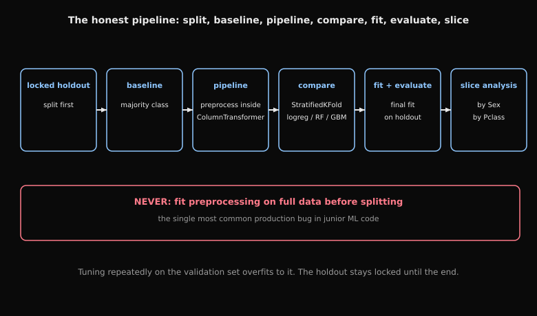
How to read this diagram
- Step one: lock the holdout split away first. Touch it once, at the very end.
- Step two: establish the majority-class baseline. Every fancier model must beat it honestly.
- Step three: build preprocessing inside a ColumnTransformer pipeline, fitted on training folds only.
- Step four: compare models under StratifiedKFold: logistic regression, random forest, gradient boosting.
- Step five: final fit, then evaluate on the locked holdout.
- Step six: slice-based error analysis by Sex and Pclass.
- The red NEVER box: fitting preprocessing on full data before splitting is the single most common production bug in junior ML code.
Build an end-to-end classical ML pipeline the way FAANG expects: correct splitting, leakage-safe preprocessing, cross-validation, baselines, and clean reporting.
Pipeline + ColumnTransformer,
- compare multiple models under cross-validation,
- perform slice-based error analysis.Tasks (7)
Task 1 Dataset & Setup
Classical ML Lab , Student (Titanic)
Build an end-to-end sklearn pipeline with correct validation and error analysis.
Section 0 , Load Titanic (hosted CSV + fallback)
Primary: https://ai.thes30.com/hostCSV/titanic.csv Fallback: data/titanic/train.csv
If both are unavailable, use a tiny synthetic dataset so the notebook runs.
Starter code
$fSolution and rationale
Solution
$10Instructor explanation
Classical ML Lab , Instructor (Titanic)
Task 2 Create train/holdout split Holdout split (untouched)
Section 1 , Holdout split (untouched)
Task 1.1: Create train/holdout split
Starter code
# TODO: split once, keep holdout untouched until the end
# HINT: stratify on Survived
y = df['Survived'].astype(int)
X = df.drop(columns=['Survived'])
X_train, X_holdout, y_train, y_holdout = ...
check('holdout_nonempty', len(X_holdout) > 0)
print(len(X_train), len(X_holdout))Hints (2)
- stratify on Survived.
- stratify on Survived
Test code
check('holdout_nonempty', len(X_holdout) > 0)Checks
- check('holdout_nonempty', len(X_holdout)
Solution and rationale
Solution
y = df['Survived'].astype(int)
X = df.drop(columns=['Survived'])
X_train, X_holdout, y_train, y_holdout = train_test_split(
X, y, test_size=0.2, random_state=0, stratify=y
)
print('train/holdout', len(X_train), len(X_holdout))Task 3 Majority-class baseline Baselines
Section 2 , Baselines
Task 2.1: Majority-class baseline
Starter code
# TODO
majority = ...
pred = ...
print('majority_acc', accuracy_score(y_holdout, pred))Solution and rationale
Solution
# Majority baseline
majority = int(y_train.mean() >= 0.5)
pred = np.full(len(y_holdout), majority)
print('majority_acc', accuracy_score(y_holdout, pred))Task 4 Define feature columns Preprocessing pipeline
Section 3 , Preprocessing pipeline
Task 3.1: Define feature columns
Use numeric + categorical columns.
Starter code
# TODO: pick columns
numeric_features = ...
categorical_features = ...
preprocess = ColumnTransformer(
transformers=[
('num', Pipeline(steps=[
('imputer', SimpleImputer(strategy='median')),
('scaler', StandardScaler()),
]), numeric_features),
('cat', Pipeline(steps=[
('imputer', SimpleImputer(strategy='most_frequent')),
('onehot', OneHotEncoder(handle_unknown='ignore')),
]), categorical_features),
]
)Solution and rationale
Solution
numeric_features = ['Age', 'Fare', 'SibSp', 'Parch']
categorical_features = ['Pclass', 'Sex', 'Embarked']
preprocess = ColumnTransformer(
transformers=[
('num', Pipeline(steps=[
('imputer', SimpleImputer(strategy='median')),
('scaler', StandardScaler()),
]), numeric_features),
('cat', Pipeline(steps=[
('imputer', SimpleImputer(strategy='most_frequent')),
('onehot', OneHotEncoder(handle_unknown='ignore')),
]), categorical_features),
]
)Task 5 Compare models with StratifiedKFold CV model comparison
Section 4 , CV model comparison
Task 4.1: Compare models with StratifiedKFold
Models:
- LogisticRegression
- RandomForestClassifier
- GradientBoostingClassifier
Starter code
cv = StratifiedKFold(n_splits=5, shuffle=True, random_state=0)
models = {
'lr': LogisticRegression(max_iter=5000),
'rf': RandomForestClassifier(n_estimators=300, random_state=0),
'gb': GradientBoostingClassifier(random_state=0),
}
scoring = {'acc': 'accuracy'}
for name, model in models.items():
pipe = Pipeline(steps=[('preprocess', preprocess), ('model', model)])
# TODO
scores = ...
print(name, 'acc_mean', np.mean(scores['test_acc']), 'acc_std', np.std(scores['test_acc']))Solution and rationale
Solution
cv = StratifiedKFold(n_splits=5, shuffle=True, random_state=0)
models = {
'lr': LogisticRegression(max_iter=5000),
'rf': RandomForestClassifier(n_estimators=300, random_state=0),
'gb': GradientBoostingClassifier(random_state=0),
}
scoring = {'acc': 'accuracy'}
cv_summary = []
for name, model in models.items():
pipe = Pipeline(steps=[('preprocess', preprocess), ('model', model)])
scores = cross_validate(pipe, X_train, y_train, cv=cv, scoring=scoring, return_train_score=False)
cv_summary.append((name, float(scores['test_acc'].mean()), float(scores['test_acc'].std())))
print('CV summary (name, mean, std)')
for row in cv_summary:
print(row)Instructor explanation
Rationale: Cross Validation guards against overfitting. It is a tool for better hyperparameter selection. It makes final performance a more honest reflection of real-world generalization.
cv = StratifiedKFold(n_splits=5, shuffle=True, random_state=0) models = { 'lr': LogisticRegression(max_iter=5000), 'rf': RandomForestClassifier(n_estimators=300, random_state=0), 'gb': GradientBoostingClassifier(random_state=0), } scoring = {'acc': 'accuracy'}
cv_summary = [] for name, model in models.items(): pipe = Pipeline(steps=[('preprocess', preprocess), ('model', model)]) scores = cross_validate(pipe, X_train, y_train, cv=cv, scoring=scoring, return_train_score=False) cv_summary.append((name, float(scores['test_acc'].mean()), float(scores['test_acc'].std())))
print('CV summary (name, mean, std)') for row in cv_summary: print(row)
Task 6 Pick best model and evaluate on holdout Final fit + holdout evaluation
Section 5 , Final fit + holdout evaluation
Task 5.1: Pick best model and evaluate on holdout
Starter code
best_model = ... # TODO
pipe = Pipeline(steps=[('preprocess', preprocess), ('model', best_model)])
pipe.fit(X_train, y_train)
pred = pipe.predict(X_holdout)
print('holdout_acc', accuracy_score(y_holdout, pred))Solution and rationale
Solution
# Pick best by mean CV acc
best_name = sorted(cv_summary, key=lambda x: x[1], reverse=True)[0][0]
best_model = models[best_name]
print('best_model', best_name)
pipe = Pipeline(steps=[('preprocess', preprocess), ('model', best_model)])
pipe.fit(X_train, y_train)
pred = pipe.predict(X_holdout)
print('holdout_acc', accuracy_score(y_holdout, pred))Task 7 Slice performance by Sex/Pclass Slice-based error analysis
Section 6 , Slice-based error analysis
Task 6.1: Slice performance by Sex/Pclass
Starter code
# TODO: attach predictions to holdout df and groupby slices
holdout_df = X_holdout.copy()
holdout_df['y_true'] = y_holdout.values
holdout_df['y_pred'] = pred
holdout_df['correct'] = ...
if 'Sex' in holdout_df.columns:
print('acc_by_sex')
print(holdout_df.groupby('Sex')['correct'].mean())
if 'Pclass' in holdout_df.columns:
print('acc_by_pclass')
print(holdout_df.groupby('Pclass')['correct'].mean())
check('slices_computed', 'correct' in holdout_df.columns)Test code
check('slices_computed', 'correct' in holdout_df.columns)Checks
- check('slices_computed', 'correct' in holdout_df.columns)
Solution and rationale
Solution
holdout_df = X_holdout.copy()
holdout_df['y_true'] = y_holdout.values
holdout_df['y_pred'] = pred
holdout_df['correct'] = (holdout_df['y_true'] == holdout_df['y_pred']).astype(int)
if 'Sex' in holdout_df.columns:
print('acc_by_sex')
print(holdout_df.groupby('Sex')['correct'].mean())
if 'Pclass' in holdout_df.columns:
print('acc_by_pclass')
print(holdout_df.groupby('Pclass')['correct'].mean())
# Rationale: slice analysis reveals failure modes hidden by overall accuracy.Why this works
slice analysis reveals failure modes hidden by overall accuracy.
Checkpoints
- What does this baseline tell you?
- Why can CV outperform a single split?
Gotchas
- If you fit preprocessing on full data before splitting, you leak.
Interview signals
| Company | Confidence | Topics | Sources |
|---|---|---|---|
| Netflix | high | SQL/Python analysis, experimentation, applied modeling | Netflix data scientist interview guide; SQL interview questions guide |
| Airbnb | high | classical ML, feature engineering, business case reasoning | Airbnb MLE interview guide; Airbnb data scientist interview guide |
| Square | high | product analytics, statistics, payments case studies | Square (Block) data scientist interview guide; Square data scientist guide |
Source: AI Lab, https://ai.thes30.com/problems/w4-d5-classical-ml-lab.
Interview clearance
Design prompt
- Implement multinomial Naive Bayes in log-space with Laplace smoothing, and explain each choice.
- Your kNN accuracy collapses when you add 50 noise features. Explain exactly why.
- Linear SVM fails on your data but RBF succeeds. What did the kernel buy you, and what did it cost?
- Derive the logistic regression gradient, then explain why the loss is convex.
- Fraud data, 1% positives, 95% accuracy. Good model? Defend your answer with the right metrics.
- Your feature importance ranking changes completely when you drop one correlated feature. Explain.
Q1. Which statement about Naive Bayes is correct? A: It assumes features are independent given the class. B: It models P(x|y) and P(y) instead of P(y|x) directly. C: Laplace smoothing prevents zero probabilities for unseen words. D: All of the above.
Answer: D. Naive Bayes is generative: it models the joint distribution via the class-conditional independence assumption.
- A, right: the "naive" assumption is exactly conditional independence of features given the class.
- B, right: it fits P(x|y) and P(y), then applies Bayes' rule, unlike discriminative logistic regression.
- C, right: Laplace smoothing adds a pseudocount alpha so unseen words get small nonzero probability instead of zeroing the whole product.
- Why log-space then: the product over hundreds of word likelihoods underflows; summing logs is exact and stable.
Q2. You compute kNN distances in 2 dimensions and it works; in 200 dimensions with the same number of points it fails. Your colleague suggests a bigger k. What do you say?
Answer: bigger k will not fix it. In high dimensions, distances concentrate: the ratio of the nearest to the farthest distance approaches 1, so "nearest" stops meaning anything. This is the curse of dimensionality, and the lab shows it empirically. The fixes are dimensionality reduction, feature selection, or a model that does not rely on raw distances. Increasing k just averages over an already meaningless neighborhood.
Q3. You train an SVM with C = 1000 and get 100% training accuracy but poor validation accuracy. You train with C = 0.01 and both are mediocre. Explain what C does and what you try next.
Answer: C trades margin width against training errors: large C punishes violations hard (narrow margin, low bias, overfits here), small C tolerates violations (wide margin, high bias, underfits here). The two results bracket the sweet spot. So you search C on a log grid with validation. Standardize features first: the margin uses distances, and the lab shows unscaled features break it. If no C works linearly, that is the signal to try the RBF kernel.
Q4. After adding one engineered feature, your tree model's validation accuracy jumps from 0.82 to 0.99. Your teammate wants to ship. What is your exact response?
Answer: stop, do not ship. A 17-point jump from one feature is the signature of leakage, and trees exploit leakage aggressively because they can memorize. The response: inspect the feature computation. Check whether it uses anything known only after the label timestamp. Rebuild it as-of the label time, and re-evaluate. If the jump disappears, you found the leak; if it survives honest reconstruction, then celebrate.
Q5. Two models on imbalanced data: model A has ROC-AUC 0.97 and PR-AUC 0.45; model B has ROC-AUC 0.90 and PR-AUC 0.62. Which do you prefer for fraud detection, and why?
Answer: model B. Under heavy imbalance, the huge number of easy true negatives inflates ROC-AUC. PR-AUC focuses on the rare positive class where the business cost lives. The lab's gotcha states this directly: a good ROC-AUC model can be poorly calibrated and practically useless. For fraud, precision-recall behavior at the operating threshold is the honest comparison.